User Guide
Version 2.2
Table of contents
1.1.1 History of the Sigmah project
1.1.2 The future of the Sigmah project
1.2.1 What is Sigmah?
1.2.2 Who is Sigmah for?
2.1 Navigating in the application
2.1.1 Tabs display
2.1.2 Cross on tabs to close windows
2.1.3 Framed double arrows: collapse/expand
2.1.4 Framed arrows: collapse/expand
2.1.5 Personalising tables
2.1.6 Non-framed double arrows: other buttons
2.2 Main icons
2.3 Colour codes
3.1 Projects
3.1.1 In-house projects
3.1.2 Funding projects
3.1.3 Local partner project
3.2 Organisational units (i.e. Mission, Base, Desk, etc.)
3.3 Contacts
3.4 Reports
3.5 Models
3.6 Document
3.7 Indicator
3.7.1 Types of indicator
3.7.2 « Indicator group »
3.7.3 « Indicator collection site »
3.7.4 Source of indicator data
3.8 Category
3.9 The "Project core" and "Project core" versions
3.10 Offline mode, offline bases, and bookmarked projects
3.11 Data framework
4.1 Dashboard
4.1.1 Reminder lists
4.1.2 Menu
4.1.3 Organisational units table
4.1.4 Projects table
4.1.5 Contacts table
4.2.1 Overview
4.2.2 Information
4.2.3 Calendar
4.2.4 Reports & documents
4.3 Project
4.3.1 Management board
4.3.2 Details
4.3.3 Logical framework
4.3.4 Manage indicators
4.3.5 Indicator Data Entry
4.3.6 Map
4.3.7 Calendar
4.3.8 Team
4.3.9 Reports and Documents
4.4 Contact
4.4.1 Details
4.4.2 Relations
4.4.3 History
5.1 How do you create or delete a project?
5.1.1 How do you create a project on the Dashboard?
5.1.2 How do you create a project on a Project page?
5.3 How do you create a project core version?
5.3.1 Locking – Unlocking a project core
5.3.2 Validating a new version
5.3.3 How do you compare project versions?
5.3.4 How do you rename a Project core version?
5.3.5 How do you display an old Project core version?
5.4 How do you copy and paste a logical framework?
5.5 How do you attach a document?
5.6 How do you attach a new version of a document?
5.7 How do you create an “indicator”?
5.8 How do you create an indicator data collection site?
5.9 How do you manage contacts?
5.9.1 How do you create or delete contacts?
5.9.2 How do you export contacts?
5.10 How do you export project data to your computer?
5.10.1 "Global export" from the Projects table on the Dashboard
5.10.2 Exporting the “Management table” and “Details” pages: the “Project summary”
5.10.3 Export logical framework data
5.10.4 Export indicator data
5.10.5 Exporting contact data
5.11 How do you change your password?
5.12 What can you do if there is an insufficient internet connection?
5.12.1 How do you prepare your offline environment?
5.12.2 How do you synchronise data after you have worked offline?
5.12.3 How do you destroy your offline environment?
5.14 How do you measure the performance of the software?
5.15 What can I do… if I have a problem??
6.1 Concepts for the administrator
6.1.1 “User”, “Profile” and “Privacy group”
6.1.2 Fields
6.1.3 Test projects
6.2.1 How do you add a user?
6.2.2 How do you disable (or enable) a user account?
6.2.3 How do you search for a user?
6.2.4 How do you edit a user account?
6.2.5 How do you add a profile?
6.2.6 How do you edit a profile?
6.2.7 How do you create a privacy group?
6.2.8 How do you edit a privacy group?
6.3 Managing organisational units
6.4.1 How do you create a project model?
6.4.2 How do you edit a project model?
6.4.3 How do you import a project model?
6.4.4 How do you modify an "Available and Used" project?
6.4.5 How do you delete a project model?
6.4.6 How do you export a project model ?
6.4.7 How do you duplicate a project model ?
6.5 Managing organisational unit models
6.5.1 How do you create an organisational unit model?
6.6.1 How do you create a contact model?
6.7.1 How do you create a new report model?
6.7.2 How do you create a new report section?
6.7.3 How do you delete a report model?
6.9 Managing importation frameworks
6.10 Settings
Introduction
The aim of this guide is to present the main functionalities of Sigmah open source software to help users to use the software and get the most out of it. It has been written with two kinds of reader in mind:
-
people who have already done a Sigmah software training course who want to refresh their memory
-
people who will use it as a self-training guide.
The guide is available in paper format (PDF document), in the form of contextual help integrated into the software itself, and on the website www.sigmah.org, in the form of a wiki. If you come across an error or feel that something is missing, please go to sigmah.org to make the necessary corrections in the guide’s wiki pages. In doing so, you will be contributing to the collaborative approach which has been behind the development of the software from the beginning.
1 General presentation
1.1 The Sigmah project
The objective of the Sigmah project is to contribute to improving the service delivered to people in crisis situations by building the management capacity of aid organisations (NGOs).
In order to do this, project management software has been developed which allows humanitarian actors to centralise information and anticipate collective activities.
1.1.1 History of the Sigmah project
Sigmah is the product of numerous forces which have been brought together:
• The project began in response to a collective request on the part of a group of French NGOs. During 2009, the needs of this group in terms of information management were evaluated: this showed that there was a shared need to improve certain priority functionalities.
• ActivityInfo, open source software for monitoring indicators, which was developed for UNICEF and its NGO partners in Congo, was integrated into the project and bedatadriven (www.bedatadriven.com), its designer, has been involved in the development of Sigmah.
• The system also follows on from the Dynamic COMPAS, free and open source software for managing the quality of humanitarian projects, developed by Groupe URD (www.urd.org), who also conducted the initial needs assessment.
The project is steered by a group of humanitarian organisations who form a “Steering Cooperative”.
For more information about the history of the project go to: www.sigmah.org
1.1.2 The future of the Sigmah project
Sigmah can be freely modified or adapted, the changes made to it being available to all. This continuous, evolving process, based on feedback from users and technical support from developers, ensures the long-term viability and relevance of the project.
There are many ways in which you can contribute to the project: you can tell us what you think about the software, keep up to date with the latest developments, test it, help to translate it, add to or correct this guide, provide us with funding or even join the group of developers! For more information, go to Sigmah website : www.sigmah.org .
1.2 Sigmah, the software
1.2.1 What is Sigmah?
Sigmah is free and open source software to help aid organisations manage operational information.
The aim of Sigmah is to improve information management for humanitarian projects by meeting the following needs with a single IT tool:
-
Monitoring projects and funding: Sigmah's homepage is a dashboard which gives an overview of progress on projects and funding.
-
Sharing documents: All key project and organisation documents can be easily shared in Sigmah, so it serves as an information sharing base.
-
Managing the project cycle: Sigmah allows organisations to parameterise their own specific project cycles, and ensure that all stages of validation for each phase and good methodological practices are respected for each project that is monitored. These project cycles can be easily modified by the organisation, notably in response to feedback from staff.
-
Managing the logical framework: The objectives, results and activities of international aid projects are very frequently organised in the form of a logical framework. Logical frameworks can be entered and monitored in Sigmah.
-
Monitoring indicators: Whether connected to a logical framework or not, it is possible to create and monitor the evoluation of all the indicators required for each project.
-
A calendar and reminders for each project: Meetings, tasks and events linked to each project can be monitored in the calendar using reminders.
-
An offline mode: The offline mode allows users to continue working with Sigmah even when they do not have an internet connection. They can then share their work with their colleagues by synchronising as soon as an internet connection is available again.
Sigmah is flexible software which can be parameterised, which means it can be adapted to each organisation depending on its needs and constraints. Rather than a standard format for the software, there is a variety of different possible formats. It is the Sigmah administrators (who have particular access rights) who are in charge of the parameterisation of the software.
Sigmah has been developed under an open source licence which means it can be shared and can evolve to the benefit of the humanitarian community as a whole.
N. B. We recommend that organisations go through a general institutional adoption process in order to use Sigmah. For more information about this kind of adoption, consult the Sigmah website (www.sigmah.org).
1.2.2 Who is Sigmah for?
Sigmah is principally for aid organisations who implement complex humanitarian projects (a number of teams in charge of several projects/programmes in a variety of technical sectors and in different organisational units ).
An individual user can use Sigmah to their advantage for a personal project, including small-scale projects, but will not be able to use the software to its full potential.
N.B. In all cases, Sigmah requires solid understanding of project cycle management and, in order to be put to optimal use, basic notions of the principles of quality assurance (Quality COMPAS method or some other quality reference framework).
Finally, using the Sigmah software does not replace the expertise of the people involved in the projects/programmes. Nor does it do away with the need to use technical tools which are specific to each sector of intervention (food security, water and sanitation, etc.) and each type of job (accounting, security, intranet, e-mails…)
2 Learning to use Sigmah
2.1 Navigating in the application
For optimal comfort of use, we suggest you use the application in full screen mode: with Mozilla Firefox, the full screen mode can be switched on and off using the F11 key.
2.1.1 Tabs display
A tabs system means that you can open several pages simultaneously on the same internet navigator window. These are situated just below the logo and the name of the organisation: they are added to the right of the initial tab on the Dashboard and cannot be switched around. The order in which they are presented is therefore the order in which the pages were opened.
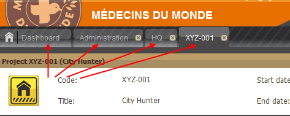
If a very large number of pages are opened, the tabs automatically move to the left, covering the first tabs which were opened. It is also possible to go through the tabs manually by clicking on one of the two triangles on the far right hand side of the tabs bar:
- The triangle pointing to the right to run through the tabs towards the right,

- The triangle pointing to the left to run through the tabs towards the left,
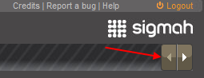
2.1.2 Cross on tabs to close windows
Apart from the Dashboard, each new page opened has a tab with a cross on it. Click on this cross to close the page:

The only way to close the Dashboard is to close the session by clicking on “Logout” in the top right hand corner of the screen:

2.1.3 Framed double arrows: collapse/expand
The framed double arrow situated in the top right hand corner of the title bar of certain sections (e.g. Reminders, Related projects, Filter, Size) is used to collapse or expand their content in order to leave more or less space to the other sections of the page.
There are four types of double arrow, each with its specific function:
-
If it is pointing to the left, this means that the section can be collapsed towards the left:

-
If it is pointing to the right, the section can be expanded to the right:

-
If it is pointing down, the block can be collapsed towards the bottom:

-
If it is pointing up, the block can be expanded towards the top:

2.1.4 Framed arrows: collapse/expand
Having opened a project, you arrive on the project’s “Management board” page. The main part of this page is taken up with Project phases. The “Phase details” section is organised in what are known as “groups” which can be expanded and collapsed by clicking on framed arrows. Click on an up arrow to collapse the group so that it is hidden from view.
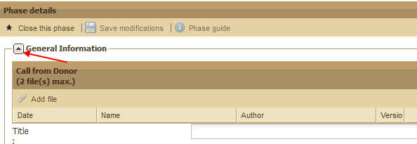
Click on a down arrow to expand the group so that it is visible again.
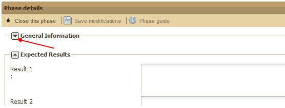
2.1.5 Personalising tables
Column content can be reorganised in all Sigmah tables. To do this, move the cursor over the right hand side of the column title. A triangle pointing downwards will appear. Click on the triangle. This opens a drop-down list which includes the three following options:

When pages are opened, they are sorted in ascending order by default.
N.B.: A fourth option ("Filter") is available for the following columns (Code, Title, Active phase and Organisational Unit). See below.
Sort Ascending and Sort Descending
“Sort Ascending” and “Sort Descending” work for letters but also for numbers (0 to infinity):

Place your cursor on Columns and another drop-down list will appear with options to be selected or deselected by ticking or unticking the boxes. These are the column headings available for the table that is being used:
- a heading preceded by a box which is ticked means that the column is displayed,
- a heading preceded by a box which is not ticked means that the column is hidden.

You can tick or untick a heading by simply clicking on the corresponding box:

It is also possible to increase or reduce the width of columns by placing the cursor over the right hand edge of each column heading. A symbol appears which consists of two arrows (one pointing left and the other pointing right) separated by two vertical lines. You can increase or reduce the width of the column by dragging the edge to the left or right.
For Code, Title, Active phase and Organisational Unit columns
For these 4 columns, when you place the cursor over the "Filters" title, a new field appears to be filled in with the letters/words of your choice (by default, the words 'enter text" appear in this field, and disappear when you place your cursor in the field).

The Filter function will automatically apply.
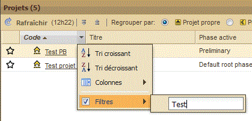
For the Budget columns (spent, recieved and planned)
By placing the cursor over "Filters", new numerical fields appear to be filled in preceded by mathematical symbols
-
the " < " symbol means you should enter a maximum amount
-
the " > " symbol means you should enter a minimum amount
-
the " = " symbol menas you should enter the exact amount you are looking for
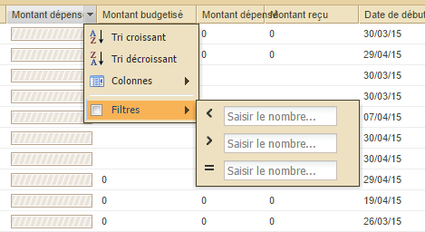
For the “Time” column
This column has a filter for closed projects. The box is ticked by default, which excludes all closed projects from the dashboard. By placing the cursor over this Filter you will see a new drop-down list which gives you the following choice:
-
Exclude all closed projects
-
Include the last 6 months: to include projects closed within the last 6 months
-
Include the last 12 months: to include projects closed within the last 12 months
-
Choose a time limit: to include projects closed after the chosen time limit

For the “Category” column
Place your cursor over "Filters" and a new drop-down list opens with tick boxes. This list includes all the category labels available in your parameterisation of Sigmah in the form: label title (name of label category).
These tickboxes allow you to filter projects as follows:
-
a label preceded by ticked box means that only projects with this value of category will be visible in the table,
-
a label preceded by an unticked box means that this value of category will not be used to filter projects in the table.

You can tick or untick a heading by simply clicking on the corresponding box:

In order to unclick all the selected labels at once, untick the box located at the left of “Filters” field.
2.1.6 Non-framed double arrows: other buttons
If your computer screen is small or if you reduce the screen space occupied by Sigmah (for example, by clicking on this symbol  on your web browser) there may not be enough space to display all the buttons on the tool bar. If this is the case, this symbol
on your web browser) there may not be enough space to display all the buttons on the tool bar. If this is the case, this symbol  will appear on the right hand side of the bar to allow you to continue to gain access to all the buttons which cannot be displayed.
will appear on the right hand side of the bar to allow you to continue to gain access to all the buttons which cannot be displayed.

When you click on the symbol, the buttons which have disappeared from the screen due to lack of space are shown. For the example above, this gives:
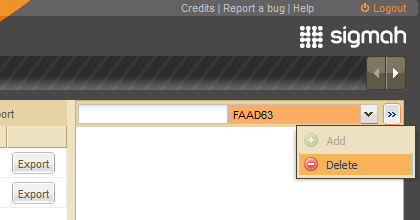
Instead of:

2.2 Main icons
|
|
Field which belongs to the Project core (See The "Project core" and "Project core" versions) |
|
|
History of modifications made to a field |
|
|
Internet connection available/ not available |
|
|
Online mode / offline mode (Voir 3.9. Offline mode, offline bases and bookmarked projects) |
 /
/
 Organisational unit
Organisational unit  NGO project
NGO project Funding project
Funding project  Local partner project
Local partner project
NB: For more information about different types of project as they are defined in Sigmah, go to « "Projects" ».
For more information about what Sigmah defines as « Organisational unit », go to « "Organisational units" ».
2.3 Colour codes
Project monitoring colour code
This allows users to quickly classify, distinguish and visualise the progress that is being made on a project in three areas: budget, time and activities.
-
Brown indicates that there are no particular problems in the corresponding area.
-
Orange indicates that there are no particular problems and the corresponding area is reaching completion.
-
Red indicates that the corresponding area is reaching completion with a potential related risk (which can vary depending on the area, but generally this means that what has taken place has gone over or is in danger of going over what was planned).
Reminders colour code
There is also a colour code for the reminders situated on the left of the Dashboard and Project Management Boards. The reminder icon can be in three different colours which have the following meanings:
To do:
-
 Done
Done -
 To do
To do -
 Late
Late
Pending:
-
 Done
Done -
 Pending
Pending -
 Late
Late
3 Definitions
3.1 Projects
In Sigmah, a project is an entity which includes at least:
A means of identification:
Project title
Project code
A duration:
start date
end date
-
A logical framework
-
A budget
-
A geographic organisational unit
-
A head of project
-
One or more monitoring phases
Depending on the specific characteristics of the model used, the project can also contain a lot of other information: anything the organisation decides is useful to monitor.
In practice, humanitarian actors use the word « project » without making a clear distinction between their own perception of the project, the perception of the donor and the perception that an implementing partner can have of it. In order to be more precise, for example, for cases involving co-funding, it was necessary to establish distinct concepts.
There are therefore three types of project in Sigmah:
Over and above their differences, the definition of a project given above applies to all three types.
3.1.1 In-house projects
An “in-house project” can either be a project which an organisation devises and implements independently or any project which does not fall clearly into either the “Funding project” or the “Local partner project” categories.
An in-house project is characterised by the organisation’s own vision and way of managing information. For example, it is used to manage internal reports, the decision-making process involved in launching a project, the indicators which the organisation wants to monitor independently, etc.
NB : in-house project icon
(See "Main icons" for more details)
3.1.2 Funding projects
“Funding” refers to the financial resources involved in one or more projects. Most projects are funded by a donor and, in most cases, donors refer to the funding as the project. A Funding project can include the different phases involved in funding, from the initial intention to project closure by way of the contract phase proper. And certain funding models can have no phases when it is not necessary to monitor the progress of a request and the state of accountability towards the donor.
Funding can be provided by one or more donors. When funds and funding requests, monitoring and communication function in a single and undispersed way, co-funding involving several donors will be considered to be a single funding project , with several associated donors. If financial reports, deadlines or amounts of money need to be independently managed by different donors, co-funding will be managed with several funding projects .
Like projects, funding can be amended.
NB : Funding project icon
(See "Main icons" for more details)
3.1.3 Local partner project
Local partner projects are those which are managed by implementing partners (generally a local partner of the organisation).
NB : Local partner project
(See "Main icons" for more details)
3.2 Organisational units (i.e. Mission, Base, Desk, etc.)
An organisational unit is a branch of an organisation in an operational field. Humanitarian organisations generally have more than one organisational unit. These organisational units correspond to the organisation’s different hierarchical levels in a crisis zone.
Traditional organisational units are HQ, Desk, Mission, Base, etc. For example, there may be an Asia Desk, a Pakistan Mission, a Bukavu Base, etc.
Sigmah therefore defines an organisational unit as the geographical area (continent, country, region) within which a project is carried out. Organisational units therefore make up a tree structure with the heaquarters as the trunk.
NB : Organisational unit icon
(See "Main icons" for more details)
3.3 Contacts
In the Sigmah database, a contact can be an individual or an organisation. It allows the user to centralise information about their interlocutors, colleagues and partners.
The management of contacts is flexible (in the same way as “Projects” and “Organisational units”): each contact is created based on a “Contact model”.
Depending on the Contact model used, the contact can be of two types:
-
“individual”
-
“organisation”
3.4 Reports
In Sigmah, a report can take any form: its structure – the model – is decided by the organisation. Each model can be modified in the Administration section of the software.
Reports can be added to and/or consulted in the “Management board” and “Reports and documents” sub-tabs.
(See "Management of Report models" for more details)
3.5 Models
In order to be as flexible as possible, Sigmah uses the concept of Models with regard to:
-
Projects
-
Organisational units
-
Contacts
-
Reports
NB: Every project that is created is associated with an organisational unit as shown in the diagram below:
In concrete terms, a project model allows you to create as many projects as you want which all require the same information, all have the same format of logical framework, the same number of phases, etc.
3.6 Document
In Sigmah, a document is an attached file. It is possible to attach several versions of the same document successively while conserving their chronology.
(For more details, go to "How do you attach a document?" et "How do you attach a new version of a document ?")
3.7 Indicator
In Sigmah, an indicator is a variable whose value is measured over time in a number of sites. For each project, users can create their own indicators and can choose whether or not to link them to the logical framework.
3.7.1 Types of indicator
Sigmah allows 2 types of indicator to be collected:
1. Quantitative indicators:
These indicators are measured in numerical terms (e.g. “the number of NFI kits distributed”)
2. Qualitative indicators:
These indicators are measured in terms which are defined when the indicator is created (e.g. “General perception of the project by the beneficiaries”, with a possible list of measurements being, Very good, Good, Poor, Very poor)
(Go to "How do you create a new indicator?" for more details)
3.7.2 « Indicator group »
Indicators can be organised into “Indicator groups”.
Indicator groups function in a similar way to folders for files:
-
An indicator group can contain as many indicators as you want
-
An indicator group can belong to only one other indicator group
Indicator groups can have the same names and structure as the elements of the logical framework, but the indicator groups are not themselves elements of the logical framework. Users can modify groups and create new groups at any time, even if certain groups have automatically taken the names of elements of the logical framework.
Groups of indicators can be manipulated on the "Manage indicators" screen and are also visible on the "Indicator Data Entry" screen.
3.7.3 « Indicator collection site »
Indicator values are collected on “indicator collection sites”.
For each project, one or more indicator collection sites can be defined. An indicator cannot have a value without a site.
A site is a geographical point to which a temporal series of indicator values are associated. This can be a distribution site, a health centre, a well, or more abstractly, a base or a capital or an indicator related to the context.
A site has:
-
A name [compulsary]
-
A roadway or waterway : the nearest road or waterway if the name of the site is not widely known
-
Geographic coordinates
-
Depending on the country where the project is taking place, the related local administrative entity or entities.
All projects have a main site. This is the first site to be defined in the Map sub-tab, and it corresponds to the location of the project. ( See Map )
3.7.4 Source of indicator data
An indicator can have data which comes from several sources:
-
it can come from a specific collection of field data;
-
it can come from one or more indicators from other projects;
-
and sometimes, it can combine both of these types of sources.
Example
For example, for a well construction programme which is co-funded by ECHO and UNICEF, the reporting may be different for each donor. The total number of wells may need to be monitored for ECHO, whereas UNICEF may only be interested in the wells that it has funded directly. 3 projects would be used to monitor this project in Sigmah: one In-house project (IP) and 2 Sources of Funding projects related to the source of funding - one ECHO project (EP) and one UNICEF project (UP). If, for example, the two donors ask for the average monthly flow rate of wells, the following indicators could be used:
|
Project |
Indicator |
Sources of data |
|
In-house project IP |
flow rate-u, “average flow rate UNICEF”, monitors all the wells directly funded by UNICEF |
Specific field collection |
|
In-house project IP |
flow rate-a, “average flow rate others”, monitors all the other wells |
Specific field collection |
|
UNICEF Project UP |
flow-rate, « Wells’ average rate of flow » |
NP.flow rate-u (flow rate-u indicator from the In-house project IP) |
|
ECHO Project EP |
flow rate, “average flow rate of wells” |
|
3.8 Category
Categories are based on specific characteristics which define projects on the basis of certain criteria which have been chosen. Different types of category are possible. These are defined when the parameters are established through "labels" with a choice of 6 different icons and 40 different colours available.
Example of categories used to distinguish types of crises:

(Go to "Managing Categories" for more details)
3.9 The "Project core" and "Project core" versions
International aid projects need to be able to evolve and adapt to changes in the context. It is sometimes necessary to revise and monitor changes in certain fundamental characteristics of the project, such as its end date, its budget or its objectives or expected results. In Sigmah, these characteristics are grouped together in the concept of the Project core, which is represented by the following icon:  .
.
The Project core can be locked in order to make sure that the basic characteristics of the project are not changed for a period.
"Project core" versions make it possible to monitor and save all the modifications made to the Project core.
More concretely, the Project core is made up of the following elements in Sigmah:
-
the logical framework of the project;
-
all the indicators linked to the logical framework (only the indicator value of a locked project core can be modified, whereas its other characteristics (title, target value, etc.) are not modifiable);
-
the start and end dates of the project;
-
the planned budget of a project (or more precisely the sub-field of the budget used as a total to calculate the budget spent) ;
-
all indicators, activities and field which have been defined as "belonging to the project core".
3.10 Offline mode, offline bases, and bookmarked projects
The offline mode allows users to continue to work on Sigmah even when there is no internet connection available. They can then share their work with their collaborators by synchronising as soon as an internet connection becomes available again.
In "offline mode", most of Sigmah can be used: you can consult the last version of downloaded information, modify information, attach files, etc. The only things which are not accessible are: modifying reports, creating projects and administrative tasks - to create a new user or modify the parameters of Sigmah, it is necessary to be connected to the internet.
What the offline mode looks like
There are two icons related to the "offline" mode:
|
|
Internet connection available / not available |
|
|
Sigmah in online mode / offline mode |
The offline mode begins automatically if the internet connection is lost.
In offline mode, the top left-hand part of the Sigmah screen loses its orange background, and the "online mode" icon changes to "offline mode" in the top right-hand corner.

The offline environment
In offline mode, users can continue to work thanks to two offline bases:
-
the offline data base, which contains all the data which is visible in offline mode as well as all the modifications that users make to this;
-
the offline file base, which contains all the files which can be consulted or which users have added while in offline mode.
Thanks to these 2 offline bases, when users lose their internet connection they can gain access to their offline environment, which is made up of:
-
all the projects which were open when the internet connection was lost;
-
all the projects which have been bookmarked;
-
all the organisational units that are visible to them.
These projects and organisational units are available in the last version that the user downloaded vefore losing the connection, either by visiting the page or by manually refreshing their offline data and file bases.
3.11 Data framework
A Data framework is like a model of a project model. It has three uses:
-
by identifying fields that are similar (e.g. Number of beneficiaries), it helps to aggregate different project models;
-
ensuring that data complies with standards or the implementation of the methodological framework;
-
in a future version of Sigmah, exporting information from different project models to a standard data format like IATI.
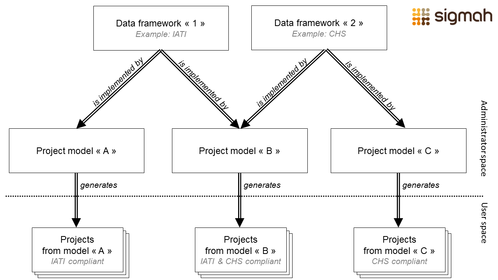Concretely, once a data framework has been made available, all the project models need to implement it. The implementation of a data framework by a project model consists of making sure that each element of the framework corresponds with a project model field. If the decision is made not to implement this framework for a project model, the reason for this should also be recorded.
4 User screens
4.1 Dashboard
The “Dashboard” is Sigmah’s home page. As such it will always stay open during a session, it being the first tab (located on the left) no matter how many pages are subsequently opened. The only way to close the Dashboard is to close the session by clicking on “Logout” in the top right hand corner of the screen.
The Dashboard is divided into 6 blocks:
- “To do” reminders list
- “Pending” reminders list
- Menu
- Organisational units table
- Contacts table
- Projects table
N.B.: By clicking on an organisational unit or a project, you open a new screen. The new screen’s tab will then be displayed to the right of the Dashboard tab.
4.1.1 Reminder lists
The “To do” and “Pending” tables show all the tasks created during projects.
These can be sorted alphabetically in ascending or descending order (by clicking on the column heading “Label”) or by date (by simply clicking on the column heading “Expected date”).
Clicking on the title of the reminder opens the relevant project’s Management table sub-tab. In addition, when the cursor is moved over the reminder a tooltip appears containing the code and the title of the related project.
To create a new task, go to "Reminders table" for more details.
For more details about the reminder colour codes, go to "Reminder colour codes".
4.1.2 Menu
For more information about the “New project” button, go to "How do you create a project on the Dashboard?".
For more information about the "Test" project button, go to "Test Projects"
For more information about the “Administration” button, go to "Administration".
For more information about the "Import" button, go to "How do you import data?"

4.1.3 Organisational units table
The Organisational units table is located at the top of the Dashboard and gives access to all the units which are visible for a user.

In default position, the Organisational units table opens with folders closed, which means without displaying sub-folders.
Opening/closing a folder which contains sub-folders
When a folder contains one or more sub-folders its icon is preceded by a grey-outlined triangle. Click on the triangle to open the folder and show the sub-folders that it contains.

When the folder is open, the triangle becomes black and points downwards. To hide the sub-folders, click on the triangle again and it will be replaced once again by a grey-outlined triangle.
If a sub-folder is preceded by a grey-outlined triangle, this means that it also contains sub-folders. Follow the same procedure to open and close these.
If an organisational unit icon is not preceded by a triangle, this means that the zone does not contain any sub-folders.
Expanding/collapsing all the organisational units
To save time, it is possible to open all the folders and sub-folders contained in the organisational units table at the same time. To do this, click on the “Expand all” button located below the table heading:

This displays all the folders and sub-folders which exist:

To collapse all the folders and sub-folders, click on the “Collapse all” button located just to the right of “Expand all”.
Managing organisational units
For more information, go to "Managing organisational units".
4.1.3.1 My main organisational unit
Users connected to several organisational units have an additional tickbox on the organisational units table: “Display only my main organisational unit”.

This tickbox is ticked by default and the Dashboard only shows the projects, organisational units and contacts linked to this main organisational unit, or one of its sub-units.
Unticking this box automatically refreshes the Dashboard so that it displays all the projects, units and contacts that are linked to the user’s main unit and all their secondary units.
4.1.4 Projects table
The Projects table on the Sigmah Dashboard lists all the projects that the user has access to.
The projects that a user has access to are:
-
all the projects in which they are part of the team (for more information, see Team);
-
(if they have the global permission to “See all projects”) all the projects in the organisational units attached to their user’s account, as well as all the projects in the related sub-units.
If the user is attached to several organisational units, the content of the table will depend on the tickbox “Display only my main organisational unit” (see “My main organisational unit”) on the Organisational units table.
The table (which is identical to the one shown in the lower section of Organisational unit pages) has 8 columns by default:
The first four columns (Code, Title, Active Phase and organisational unit) contain written content, the following three columns (Spent budget, Time and Activity) contain diagrams and the last column (Category) contains icons.
Updating the information contained in the Projects table
All the additions and modifications which you or other users make in real time in different projects and organisational units are not constantly and automatically recorded in the Dashboard and its different sections, such as the Projects table.
In order to have the most updated version of the information recorded since the last time the Dashboard was used, click on the “Reload project” button located below the table heading.

While the table is being updated a loading bar is displayed:

N.B.: The Projects table in the Overview page of Organisational units does not have a “Reload project” button. There are two options to update this table:
- Close and then reopen the page
- Press the F5 key on your keyboard.
Grouping projects by type
By default, projects are listed by “NGO project” with Funding projects and Local partner projects grouped in relation to these.

If you select Funding project, this re-organises the list of projects so that they are listed by Funding project with NGO projects and Local partner projects grouped in relation to these.
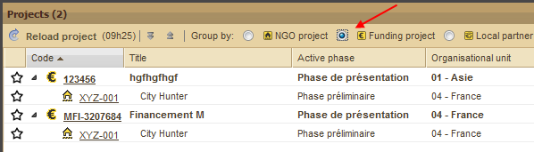
If you select Local partner project, NGO projects and Funding projects are then grouped in relation to these.

Display/Hide related projects
It is possible to close each project’s related projects by clicking on the black triangle pointing down to the right in the Code column:

The black triangle is replaced by a grey-outlined horizontal triangle.

Expanding/collapsing all the projects
To save time, it is possible to open all the projects (of the type selected) contained in the table of projects. To do this, click on the “Expand all” button located under the table heading, to the right of the “Reload project” button.

All the projects related to those you have chosen to appear by default are now displayed:

To collapse all the related projects and leave visible only the projects which you have chosen to display by default, click on the “Collapse all” button located to the right of the “Expand all” button.
Bookmarking a project
In the Projects table, the first column on the left allows you to bookmark a particular project. To do this, click on the star which is grey by default.

The star will become yellow and a confirmation message appears in the bottom right hand corner of the screen.
 A bookmarked project will automatically be part of your offline data base when you use the offline mode. For more information, see Offline mode, offline bases and bookmarked projects
A bookmarked project will automatically be part of your offline data base when you use the offline mode. For more information, see Offline mode, offline bases and bookmarked projects
4.1.5 Contacts table
The Contacts table lists all the contacts that are visible to the user. If the user is attached to several operational units, the content displayed in the table will depend on whether or not the tickbox “Display only my main organisational unit” in the Organisational units table is ticked (My main organisational unit). This table is only visible to users who have the general “See contacts” privilege. The Contacts table is made up of:-
- an upper band including buttons for creating, importing and exporting contacts. It also allows contacts to be modified, and the way they are displayed to be managed;
- a table, in the centre, split into six visible columns (type, surname, first name, type of modification, object of modification, value of modification), and six columns that are hidden by default (email address, permanent user name, organisation, parent organisation, date of last modification and modification comment) ;
- a lower band allowing the pages of the Contacts table to be managed.
4.2 Organisational unit
organisational unit pages are accessed by clicking on the titles in the organisational units table.
At the top of each organisational unit page is the Code and the Title of the unit and possibly other information decided when the parameters are established.
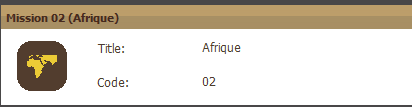
organisational units have four related pages:
These are accessed by clicking on the sub-tabs below the title bar:

4.2.1 Overview
The Overview page includes two tables:
-
The upper table is the Organization table, which has 3 columns by default: Code, Title, Country. If a code is preceded by a triangle, this means that it is divided into several sub-codes which correspond to a number of different Bases. To show these sub-codes, click on the triangle. To hide them, click on the triangle again.
-
The lower table is a Projects table with 8 columns by default: Code, Title, Active phase, organisational unit, Spent budget, Time, Activity (the latter three taking the form of gauges (see Colour Codes for more information) and Category (which uses icons).
For more information about the Projects table go to "Projects table".
Sorting organisational units
When you place your cursor on the right hand side of a column heading, a triangle appears. Click on the triangle to open a drop-down list with the following three options: Sort Ascending, Sort Descending and Columns.

Sort Ascending and Sort Descending reorganises the column content both alphabetically and in terms of numbers (0 to infinity).
If you place your cursor over « Columns », a new drop-down list opens with boxes to select and de-select. These are the column headings available for the table: if the box is ticked the corresponding heading is displayed and if it is not ticked the heading is hidden. Select and de-select headings by clicking on the corresponding boxes.

N. B.: These two tables are the same as the tables on the Dashboard.
4.2.2 Information
The information page brings together all the information for the related organisational unit model. It always includes lines for the code and the title and space for all the other fundamental characteristics of the organisational unit.
4.2.3 Calendar
The Calendar page is divided into two parts:
1. On the left is the list of types of entry. It is possible to hide certain types of entry to increase the space available for the others by deselecting them. It is also possible to hide the list of types of entry to increase the size of the right hand section (see "Framed double arrows: collapse/expand" for more details) and sort the types of entry in ascending or descending alphabetical order by clicking on the triangle on the right hand side of the Name line.
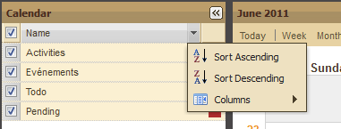
2. On the right is the Calendar, which can be presented in three different ways:
-
day,
-
week
-
month
The default format of the calendar is the current month. The date of each day is written in dark grey. The weeks of the year are numbered to the left of each line in orange.
The Previous and Next buttons allow you to go to the previous or the following month or week depending on the selected format.
It is also possible to add an event by clicking on the “Add Event” tab.

This opens the following dialogue box:

Fill in the different lines then click on OK. The event then appears in the Calendar.
N. B.: To select a whole day for an activity or an event, do not specify a start hour or end hour.
4.2.4 Reports & documents
Go to "Reports & documents" in the Project section.
4.3 Project
4.3.1 Management board
The Management board has three sections:
1. The “Reminders” table
2. The “Phases” table
3. The “Related projects” table (not to be confused with the Dashboard or Overview Project tables)
4.3.1.1 Reminders table
This table has two sections: activities ‘To do ’ and activities ‘Pending’. Both of these include the following 4 columns by default:
-
Close?,
-
Label,
-
Expected date,
-
Completed date.
In both sections you can also:
-
Add a task by clicking on “Add”. This opens the following dialogue box:

-
Filter tasks by level of progress: Completed, Ongoing, Date exceeded . To do this, click on “Filter”. This opens the following dialogue box :

Choose one of the options to display only the tasks with this status.
These tables use a colour code: black is the basic colour while red signals a task that is behind schedule.
4.3.1.2 The Phases Table
The Phases table includes elements which are decided during the parameterisation. For example, if the model retained is that of the Quality COMPAS, the Quality assurance method developed by Groupe URD, it will include the following 5 phases:
-
Preliminary
-
Initial assessment
-
Design
-
Implementation and monitoring
-
Closure
Each phase of the project cycle is split into groups. Each group has a series of fields to be filled in. Some of these groups of fields can be repeated in several “iterations”: see “Using iterative groups”.
Each phase is accessed via a system of colour-coded tabs:
-
Light grey: the tab is being used (by default, it is the first tab on the left, that of the preliminary phase, which is active).
-
Medium grey: the tab is accessible (it is possible to click on it because the phase is open)
-
Dark grey: the tab is inaccessible (it is not possible to click on it as the phase is not yet open)
To complete a phase:
-
Either, open the following phase by clicking on “Activate this phase” under "Phase details" (N.B. if a preceding phase is already open, all the required sections need to have been filled in and saved before the following phase can be activated).
-
Or, close it by clicking on "Close this phase" under "Phase details" (N.B. all the required sections of the phase need to have been filled in and saved before it can be closed).
Clicking on a phase tab opens a table with two parts:
-
On the left, the “Required fields”
-
On the right, the “Phase details ”
Required fields
In the “Required fields” section, the list of questions that can be answered in the “Phase details” section is displayed. This also shows whether or not the questions have been answered (red for unanswered, green for answered) and the type of answer required (text, multiple choice, checkbox).
If a required field belongs to an iterative group, it has to be filled in for each group iteration in order to be considered completed for the whole phase (green light). For more information, see “Using iterative groups”.
Phase details
The “Phase details” section can include different sub-sections depending on the choices made during parameterisation.
N.B.: A link with the quality criterion from the quality reference framework that has been adopted (such as the Quality COMPAS) is available via an information bubble that appears when you place the cursor over the field.
By clicking on this symbol  , the list of modifications made to this answer is shown in a window:
, the list of modifications made to this answer is shown in a window:

While writing answers, it is recommended that users click regularly on the "Save modifications" button to reduce the risk that answers are lost, especially when the quality of the internet connection is poor.
Phase guide
The “Phase guide” button (on the right, below the “Phase details” heading) allows you to gain access to one or more documents to help you write a report. Support materials of this kind are included in Sigmah during the parameterisation. (For more information, go to "How do you create a project model?").

N. B.: Clicking on a report in the Management board leads directly to the sub-tab “Reports and Documents”
4.3.1.2.1 Using “iterative groups”
Certain field groups can be repeated. These are called “iterative groups” because it is possible to create several “iterations” of them.
An iterative group is similar to other field groups in Sigmah, with two notable exceptions: tabs at the top representing each iteration, and on the upper part of each tab a specific toolbar for manipulating the iteration. Next to the name of the tab a red or green dot shows whether or not all the fields of the group have been filled in (red = no, green = yes).
For each iterative group, it is possible to:
-
create a new iteration by clicking on the “+” tab on the right of each iteration tab: this action is only authorised for users who have the general “Create iteration groups” privilege;
-
rename an iteration by opening its tab and clicking on the “Rename iteration” button;
-
delete an iteration by opening its tab and clicking on the “Delete iteration” button.
4.3.1.3 The “Related projects” table
The Related projects table is split into two sections:
-
On the left is the “Sources of funding” section: this concerns the sources of funding for the project which is open

-
On the right is the “Funded projects” section: this concerns projects which are funded by the project which is open
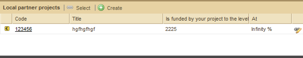
1. Funding projects
There are two ways to create a link between an existing project which is open and a funding project:
-
by creating a new project (see sub-section “How do you create a project on a Project page ?”),
-
by selecting an existing project
To select an existing project, click on “Select” to open the following dialogue box :
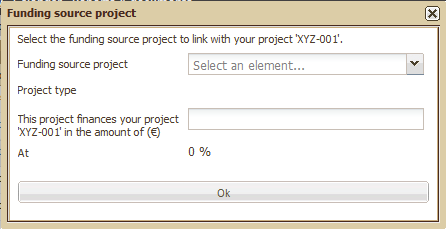
Once you have filled in the required information, click on OK. Then a confirmation message appears.
2. Funded projects
There are two ways to create a link between an existing project which is open and a local partner project:
-
by creating a new project (see sub-section "How do you create a project on a Project page ?"),
-
selecting an existing project
To select an existing project, click on Select to open the following dialogue box:

Once you have filled in the required information, click on OK. Then a confirmation message appears.
4.3.2 Details
Depending on the project model, this page can include information about the project which is not related to particular phases.
4.3.3 Logical framework
The Logical framework allows you to define or update the logical framework of a project. The lines of the logical framework are Specific Objectives, Expected Results , Activities and Prerequisites. Certain project models allow you to use groups of elements for the logical framework (groups of specific objectives, of expected results, of activities and of prerequisites).
More specifically, the Logical framework sub-tab allows you to carry out the following actions:
-
Modify the main objective
-
Modify the contents of a line
-
Add lines
-
Move lines
-
Cut and paste a full logical framework
-
Export a full logical framework
-
Remove lines
-
Add groups
-
Rename groups
-
Remove groups
-
Edit activities
N.B.: Remember to click “Save” to record the changes made to the logical framework!
Modifying the main objective
The main objective is located at the top of the logical framework. In order to modify it, place your cursor in the box and type in the new main objective heading.

Modifying the contents of a line
Each line of the table contains 3 types of information:
-
Intervention logic: this is like the title of the line (the heading of the objective, result, activity, etc.).
-
Indicators: these are points which are measured to establish the extent to which objectives are being met.
-
Means of verification: these are the means used to measure the indicators for each line.
-
Risks and Assumptions: complementary information which describes the conditions in which the objective or result can be achieved, and what risks can prevent them from being achieved.
To modify the Intervention logic or the Risks and Assumptions, simply click on the corresponding field to modify its content.
Adding lines
To add a line, click on “Add” located just below the name of the line. For example, for the Specific Objectives line, this gives the following:
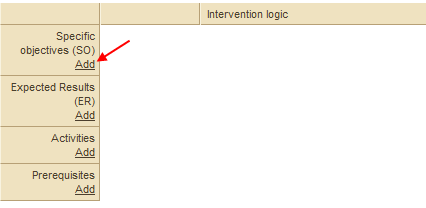
If your model groups are used for specific objectives, the following dialogue box appears:
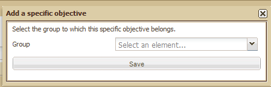
Once the group has been selected in the drop-down list, click on OK. Your new specific objective then appears, identified with the next letter in the alphabet and the name you may have given it:

N. B.: The activities of the Logical framework are automatically displayed in the Calendar.
Moving lines
Once your Logical framework has more than one Specific Objective (or Expected Result, Activity or Prerequisite), you can change their order by right clicking on the line you want to move. You are then given the choice of moving the line up or down or deleting it:

Copy and paste a logical framework
In order to avoid completely rewriting a new logical framework similar to a previous one, Sigmah allows you copy a whole logical framework and paste it in a newly created logical framework.
Go to "How do you copy and paste a logical framework"?
Export a logical framework
In order to be able to use the existing logical framwork with a spreadsheet software from your computer, Sigmah allows you to export all the information included in a logical framework and to save them in your computer while choosing the file type .ods (Open Document Spreadsheet) or .xls (Excel), depending on the settings that you defined in the "Global Settings" part of your Administration.
To do so, click on the “Export” button in the top right hand corner:

A dialogue box appears. Choose where to save the file in your computer and click on "Save" button.
Deleting lines
To delete a line click on the generic heading (Group (SO), Group (ER), Groupe (A), Group (P), or SO, ER, A, P). Then click on “Delete”:
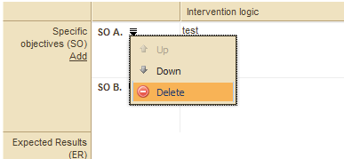
Adding groups
To add groups, click on “Add a group” located at the bottom of the line. For example, for a Specific Objectives group:

The following dialogue box appears:

After typing in a name, click OK.
The group is now created and appears in the logical framework.
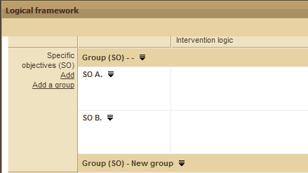
Renaming groups
To rename a group, click on the generic heading (Groupe (SO), Group (ER), Group (A), Group (P)). This opens a list which includes a Rename button:

Click on Rename to open the following dialogue box:

Type the name of your choice then click OK. The new group name then appears in the logical framework.
Deleting groups
To delete a group, click on the generic heading (Groupe (SO), Group (ER), Group (A), Group (P)). This opens a menu which includes a Delete button:
Click on the Delete button to remove the group.
Edit activities
For activities, all actions previously described are possible (moving or deleting lines); however, some important elements, linked to activities, change during the project and has to be modifiable.
This is why you can:
-
Edit the start date of an activity
-
Edit the end date of an activity
-
Make the activity progress evolve
In order to change an activity already created, click on the activity generic heading (A A.1.1 for example). Choose the « Edit » option.
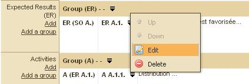
The following dialogue bow appears:
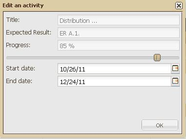
Change the element you want:
-
Click on the calendar next to the dates to change them
-
Move the cursor on the progress bar to change the activity progress
NB : By changing the progress bar of an activity, it will make the « Activity» progress bar of the « projects table » block in the Dashboard evolve.

4.3.4 Manage indicators
N.B.: Don’t forget to click on "Save" before leaving the screen!
The “Manage indicators” sub-tab allows you to:

Defining indicators
To create an indicator, click on the “New Indicator” button. If you have selected a line of a group of indicators in the table, the indicator that you are going to create by clicking on “New indicator” will automatically belong to this group (you will be able to move it afterwards).
See "How do you create an indicator?" for more details about creating indicators.
To modify the definition of an indicator, click on the link with the indicator’s name.
To remove an indicator, click on the line of the indicator in the table (and not on the link) to select it, then click on “Delete”.
Creating and re-naming an Indicator Group
Indicator groups make it possible to organise the indicators for a project. (see the definition of an "Indicator group" above for more details).
To create an indicator group, click on the “New group” button. If you have selected a line in a group of indicators in the table, the group that you are going to create by clicking on “New group” will automatically belong to this group (you will be able to move it afterwards).
To rename a group of indicators, just double click on its name. Remember to click on “Save” once the group has been renamed.
Organising indicators and indicator groups
Indicators can be organised into groups. Each group can contain sub-groups, etc.
There are 3 ways to put an indicator into a group:
-
If the indicator is not yet created, select the group where you want to put it, then click on the “New indicator” button. The indicator will then be created in the selected group.
-
Open the form for modifying the indicator by clicking on the link below its name, modify the group of the indicator and click on “Save”.

-
Use “drag and drop”: click the left-hand button of the mouse on the line of the indicator to be moved, then, continuing to hold down the button, move the cursor over the group where you want to put the indicator, then release the button.
To put one indicator group into another, there are 2 possible solutions:
-
If you have not yet created the group, select the group where you want to put it, then click on the “New group” button. The group will be created in the group you have selected.
-
Use “drag and drop”: click the left-hand button of the mouse on the line of the group to be moved, then, continuing to hold down the button, move the cursor over the group where you want to put the selected group, then release the button.
Specifying indicator measurement sites
Indicator data collection sites are specified using the “Sites” tab situated to the right of the screen.
-
To specify a site, click on “New site”. For more information on specifying sites, go to "How do you create an indicator data collection site?"
-
To modify a site, click on the name of the site then on the “Edit” button
-
To delete a site, click on the name of the site, then click “Delete Site”

Visualising indicator collection sites
To visualise the collection sites of an indicator, click on the Map icon to the left of the indicator’s name in the table. All the sites where this indicator has been collected are then shown on the map.

To export all indicators in a spreadsheet file (Open Document Spreadsheet, or MS Excel), you just have to click on the "Export" button located on the top-right corner of the indicators table.

4.3.5 Indicator Data Entry
The Indicator Data Entry sub-tab allows you to do two things:
-
Enter or consult the data collected
-
Consult or modify the definition of indicators
Using the table
The indicator data can be viewed in 3 different ways on this screen:
-
By site: this shows the data at a particular site for all the indicators (lines) for each month (columns) :
-
By indicator: this shows the data for a particular indicator at all the sites (lines) for each month (columns)
-
By month: this shows the data during a particular month for all the indicators (columns) at all the sites (lines).
The choice of having the indicators in columns and the sites in lines, or vice-versa, can be changed by clicking on the arrows button ( ) in the top left hand corner of the table.
) in the top left hand corner of the table.
To change the type of view being used, there are 3 possibilities:
1. The magnifying glass button ( ) next to each heading (Site, Indicator or Month) allows you to view the data from the point of view of a particular site, indicator or month.
) next to each heading (Site, Indicator or Month) allows you to view the data from the point of view of a particular site, indicator or month.
For example, by clicking on the magnifying glass next to the indicator heading “No. of NFI kits distributed”, the table changes to show the data by indicator for the indicator “No. of NFI kits distributed”.
2. Filter drop-down lists: the table can be viewed from a particular site, indicator or month by selecting one of these in the 3 filter drop-down lists located at the top of the table – “Site”, “Indicator” and “Indicator values for”.
3. Previous view ( )and next view (
)and next view ( )buttons: these allow you to go through the different views which have already been chosen.
)buttons: these allow you to go through the different views which have already been chosen.
The “Default view” is the view which is loaded when the “Indicator Data Entry” sub-tab is opened.
To choose a particular view as the default view when opening the “Indicator Data Entry” sub-tab, click on the “Default view” box.
De-select the view by clicking on the box again
Entering indicator data
To enter indicator data:
-
select an appropriate view to gain access to the data to be entered;
-
click on the unit that you want to modify;
-
type in the value, then press “Enter”;
-
click on “Save” in the top left hand corner of the screen to save the data.
Consulting or modifying the definition of indicators
To consult or modify the definition of an indicator, click on the pencil button ( ) next to the name of the indicator in the table. This opens the indicator’s card (see "Defining indicators" for more details).
) next to the name of the indicator in the table. This opens the indicator’s card (see "Defining indicators" for more details).
4.3.6 Map
The "Map" sub-tab allows you to:
-
Establish the location of the project (left-hand side: Site)
-
Establish indicator collection sites (left-hand side: Site)
-
View indicator collection sites (right-hand side: Map)

Setting the location of the project
-
Click on "Set project location", a window appears and asks you to geolocalise your project.
-
Enter the data and click on "Save".
Setting indicator collection sites
-
To create a site, click on "New Site" (see "How do you create an indicator collection site?" for more information about creating sites)
-
To modify a site: click on the name of the site, then on "Edit Site"
-
To delete a site, click on the name of the site, then on the "Delete" button
View indicator collection sites
The right-hand section of the Map sub-tab allows you to view the indicator collection sites and the location of the project.
4.3.7 Calendar
The Calendar page is divided into two parts:
1. On the left is the “Types of Entry” list which can be hidden to increase the size of the calendar (see "Framed double arrows" for more details). You can also choose to display or hide different entries selecting or de-selecting them in the “Types of entry” list.

2. On the right is the calendar which can be presented in three different formats: Today, Week and Month.
The calendar’s default format is the current month. The date of each day is written in dark grey. The weeks of the year are numbered to the left of each line in orange. The “Previous” and “Next” buttons allow you to go to the previous or the following month or week, depending on the selected format. It is also possible to add an event by clicking on the “Add Event” button.
This opens the following dialogue box:
Fill in the different fields then click OK. The event then appears in the Calendar.
The activities indicated in the logical framework are also displayed in the Calendar.
4.3.8 Team
The “Team” sub-tab allows you to edit and consult the list of members of a project team. Users who only have a “See your projects” authorisation are only able to see projects that they are involved in as team members.
Three actions can be carried out on this screen via 3 different buttons:
-
“Add team member” allows a user to be added to the team;
-
“Add a user profile to the team” allows a whole profile to be added to the team: all users with this profile are considered to be members of the team;
-
the recycle bin at the end of each team member’s line allows the corresponding user or user profile to be removed from the list of team members.
The Manager of a project is obviously always part of the team. It is possible to change the Manager by changing the entry in the Manager field which is located, depending on how the project model has been configured, either in the Details sub-tab or in one of the phases.
4.3.9 Reports and Documents
The “Reports and Documents” page is used for two purposes:
-
Writing reports using a model chosen during parameterization.
-
Attaching documents saved on your computer.
N. B.: The following icons are used to distinguish the reports and documents in the table:
-
 reports
reports -
 documents
documents
4.3.9.1 Writing a report
Creating a report
To create a new report, click on “New Report” on the left hand side of the screen:
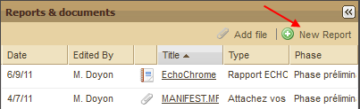
This opens a list of different reports available for this project, organised by phase:

Click on a phase to select it. This opens a dialogue box. Enter the title then click on OK to confirm.

Following this:
1. A confirmation message appears in the bottom right hand corner of the screen.
2. In the right hand part of the screen, the structure of your report appears in keeping with the model chosen during the parameterization.
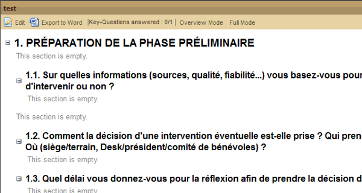
Opening an existing report
Click on the title of a report in the left hand section to display its contents in the right hand section:
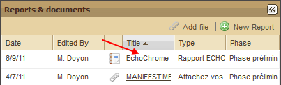
The contents of the selected report are displayed, with the title at the top:

Showing reports in Overview Mode and Full Mode
The default position for reports is “Full Mode” with all questions (model sections) and answers displayed. The size of the report’s sections and sub-sections can be altered by clicking on the – button to hide an answer and the + button to expand it again.

It is also possible to display reports in overview mode which automatically displays the report in its most condensed form, with all of the answers hidden, leaving only section titles and questions visible.

Export a report
To export a report, select the report of your choice in the left hand table, Reports and Documents, then click the button Export Word situated under the title of the right hand table, which now has the name of the selected report.
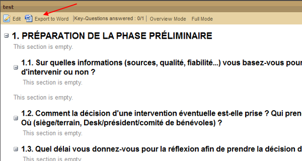
This opens your computer’s file-saving dialogue box:

Once you have selected a folder, click on Save. Once it has been downloaded, the file is available in .rtf format.
4.3.9.2 Attaching a document
Attaching a file
To attach a document click on “Attach file”.

A menu drops down with all the types of document which can be attached to this project:

Select a type of document by clicking on its heading. This opens a dialogue box.

Click on “Add file”. This opens your computer’s file selection dialogue box:

Select the file of your choice then click on “Open”.
This opens a dialogue box asking you whether you want to add a monitored point to the file:

Click “Yes” to confirm and “No” to cancel it.
If you click Yes, this opens a new dialogue box related to creating the monitored point.

Finally, your attached document is displayed in the Reports and Documents table, with the following information:
-
Date
-
Edited by
-
Title
-
Type
-
Phase in which the attachment was added

Opening a document
To open a document, just click on the title.
4.4 Contact
Contacts can be accessed by clicking on the Contacts table on the Dashboard.
All contact pages have a Contact card on the left-hand side giving the contact’s name and organisation, and other fields that are chosen during configuration.
Three sub-tabs are available on the right-hand side of the page:
-
Details
-
Relations
-
History
All information about a contact can be modified in the “Details” tab.
4.4.1 Details
The Details sub-tab allows all the available fields, organised into groups (like the “Details” sub-tab of a project), to be modified.
This sub-tab allows two other actions to be carried out via two different buttons:
-
“Export” to generate a “Contact export” (see “Export contact” for more information);
-
“Delete” to delete the contact.
4.4.2 Relations
The Relations table allows you to see a contact’s relations with other contacts, projects and organisational units. It is organised into six columns:
-
Relation: name of the field from the “Contact list” that generated this relation;
-
Object: name of the group containing the “Contact list” field that generated this relation;
-
Type: type of relation with the contact (project, organisational unit, contact model, etc.).
-
Name: name of the contact, project or organisational unit;
-
Member: shows, for example, whether contact A is a member of contact B.
There are two filter buttons: “Members” and “Is a member of”. These respectively filter the table so that it only shows the contact’s members, or the relations that the contact is a member of.
An “Export” button is also available to export a contact’s relations.
4.4.3 History
This sub-tab allows you list all the modifications that have been made to a contact (the modification of a field, the addition of a relation to a project, the removal of a relation from an organisational unit, etc.).
5 How do you…?
This part of the guide aims to answer common questions about using Sigmah.
5.1 How do you create or delete a project?
There are two ways of creating a new project with Sigmah. Your choice of whether to use one or the other will depend mostly on the links between the new project and other projects, but also on personal working methods. See:
To delete a project, click on the "Delete this sproject" button located at the end of the tab list related to a "project" page (Management board, Details, Log frame, Manage Indicators, Indicator Data Entry, Calendar, Reports & documents).
This opens a dialogue box to confirm the deletion.
Warning: The "Delete this project" button only appears if your user's profile allows you to delete a project (see How do you edit a profile?)
5.1.1 How do you create a project on the Dashboard?
The first way of creating a project is with the Dashboard. To do this, click on “New project” in the “Menu” in the bottom left hand corner of the screen.

This opens a dialogue box:

When you have filled in the relevant information, click on “Create”. A confirmation message appears in the bottom right hand corner of the screen.
5.1.2 How do you create a project on a Project page?
A new project can be created on a Project page via the “Related projects” section at the bottom of the screen. This section is divided into two columns: “Sources of funding” and “Funded projects”.
Click on the “Create” button in the relevant column:
“Sources of funding”:

Or “Funded projects”:

This opens a dialogue box:
Sources of funding:

Funded project:

Once you have completed the box, click on “Create”. A confirmation message appears in the bottom right hand corner of the screen.
5.2 How do you change phase?
To complete a phase, it is necessary to:
-
open the phase by clicking on the “Activate this phase” button (N.B. if a preceding phase is already open, all its required sections need to be completed and saved before the following phase can be activated).
-
close the phase by clicking on the “Close this phase" button (N.B. all the required sections of this phase need to be completed and saved before it can be closed).
For more information about changing phase, see the "Phases table".
5.3 How do you create a project core version?
A project core version allows you to keep a trace of the core characteristics of a project. For more information, see 3.8 "Project core" and "Project core version".
The fields related to the project core are marked with this symboll  .
.
To create a new project core version:
-
Open the relevant project.
-
Make the required modifications to the project.
-
Lock the project core: see 5.3.1 Locking or Unlocking a project core
-
Validating the new version: see 5.3.2 Validating a project core version
-
Enter the name of the new version in the Validate version dialogue box (as below)

5.3.1 Locking – Unlocking a project core
Project core versions can be locked and unlocked. Locking a version is useful in that it makes sure everyone knows what the final state of a version is before proposing a new version to be validated.
Only users with the relevant authorisation in their user profile can lock or unlock a Project core version.
To lock a project core, click on "Lock core” in the “Project Core” section.
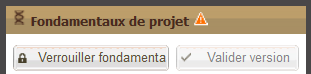
Once the project core has been locked, you can validate a new project core version (see “Validating a new version”).
To be able to modify the project core, click on “Unlock core".
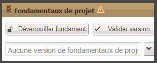
5.3.2 Validating a new version
Once the Project core is locked, it is possible to save this Project core status by validating the creation of a new Project core version.
Only users who have the relevant authorisation in their user profile can validate a new Project core version.
To validate a Project core version, click on “Validate version”.
This opens a window where you are asked to give your new version a title. Enter the title, then click on "Create version".
The new version is added to the drop-down list in the Project core management section.
5.3.3 How do you compare project versions?
To compare two versions, click on the drop-down arrow in the Project core block.
The list of existing versions appears. Click on "Compare versions":
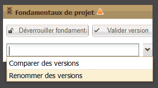
This opens the following window which asks you to choose the versions you want to compare. The differences between the two versions are then shown:

5.3.4 How do you rename a Project core version?
To rename the title of a Project core version, open the dropdown menu of the Project core management block, and click on "Rename versions":
This opens the following dialogue box:

Modify the name of the version then click on "Save".
5.3.5 How do you display an old Project core version?
When several Project core versions have been created, it is possible to display the project as it was when these Project core versions were validated.
To display an old Project core version, open the drop-down list in the Project core management section:

The lower part of the drop-down list entitled "Display version" allows the project to be displayed in one of the Core project versions listed.
Select the Project core version that you want to display and the project page is reloaded to display the project as it was at the time.
Returning to the working version from a past version of the project
When a past version of the Project core is displayed, the Project core management block shows a single button "Back to working version" instead of the two buttons, "Lock project core" and "Validate version".

To close the old version of the Project core and come back to the working version, click on "Back to working version".
5.4 How do you copy and paste a logical framework?
In order to avoid having to write out a logical framework which is similar to a previous one, you can copy and paste the previous one.
To do this, open the logical framework page of the project you want to copy and click on the “Copy” button in the top right hand corner:

This opens a box in the bottom right hand corner of the screen to confirm that the logical framework has been copied.
Next, go to the Logical Framework page of the project you are designing by clicking on “Paste”:
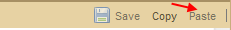
A dialogue box appears which asks you to :
-
confirm that you want to insert the copied logical framework:
-
choose if you want to link the copied indicators to their original source logical framework : if so, the indicators of the source logical framework will be selected as the source of data for the indicators created in the pasted logical framework (see the definition of the concept of "Indicator data source" for more details).

If you click Yes, a confirmation message appears in the bottom right hand corner of the screen.
5.5 How do you attach a document?
See Reports & documents for more details about this process.
5.6 How do you attach a new version of a document?
Attaching a new version
To add a new version of a document which is already attached, click on the "New version" button.
The difference between attaching a new file and attaching a new version
In Sigmah, a file attachment field can be set up to recieve a limited or unlimited number of documents. However, it is always possible to add as many versions as you want of a document as long as the file attachment field is not locked (for example, when the phase is closed).
For example, in the following screen, the number of files which can be attached to the "Initial Assessment Report" field has been limited to 1 during the parameterisation. This limit is indicated by "1 document(s) max." next to the title.

The "Add a file" button makes it possible to add a new file to the file field. Thus, you could allow an unlimited number of image files to be added to a field entitled "Photos". If the limit of the authorised number is reached, the "Add a file" button is de-activated as in the screen above.
The "New version" button allows a new version to be added which then replaces the file version already attached. Previous versions of the file can still be viewed by clicking on "History".
See Reports & documents.
5.7 How do you create an “indicator”?
Indicators are created via the “Manage indicators” sub-tab on a project page by clicking on the “New Indicator” button.
This opens the “New Indicator” dialogue box (quantitative by default) :

Whether for quantitative or qualitative indicators, the sections to be filled in are as follows:
-
Code [required]: a code so that the indicator can be identified rapidly (examples : I3.5, nfi, nb.puits)
-
Name [required]: the complete name of the indicator (example : “Number of NFI kits distributed” or “General perception of the quality of the programme by beneficiaries”)
-
Type: Quantitative or Qualitative (see definition of indicator)
-
Comments: a box to give any complementary information about the indicator
-
Datasources: data sources for this indicator. There are two possible types of source. Ticking the "Data entered directly into the project" box allows data entered in the "Indicator data entry" sub-tab to be included in the final indicator value. Ticking "Other indicators" also allows indicator values from other projects to be aggregated.
If the indicator is "Quantitative", the following sections are added:
Aggregation method [required] :
Sum: if the data collected at the different sites over time needs to be added together to produce the overall value of the indicator.
Average: if the value of the indicator needs to be calculated by establishing the average of all the values collected at the different sites over time.
-
Units [required]: a short description of the unit of value (examples : “kits”, “wells”)
-
Target value: the value of the indicator which is being aimed for by the end of the project
If the indicator is qualitative, the following sections are added:
Possible values [required]: each line of the list corresponds to a proposed value collected at a particular site at a particular time.
5.8 How do you create an indicator data collection site?
To create an indicator collection site:
-
Open the "Map" sub-tab for the relevant project.
-
Click on the "New site” button
-
Fill in the different characteristics of the new site (see the definition of an "Indicator collection site" for more details about these characteristics)
-
Click on “Save”.
The indicator collection site is now created.
5.9 How do you manage contacts?
Sigmah has an optional contact management module. This module can be used by certain user profiles depending on how Sigmah has been configured. The module allows you to keep your contact list updated via three main features:
1. Create or delete contacts
2. Import contacts
3. Export contacts
All the contacts that are visible to a user can be accessed via the Contacts table on the Dashboard (see Contacts table).
5.9.1 How do you create or delete contacts?
New contacts can be created in several ways:
by filling in a form that can be accessed:
via the “Create” button on the Contacts table on the Dashboard;
via the “Create” button in a Contact list field in a project, organisational unit or another contact: the contact that is created in this way is directly added to the contact list and a relation is established with the relevant project, unit or contact;
-
by importing contacts: see How do you import contacts?
There is a deduplication feature which warns the user that two contacts with the same email address or with similar surnames and first names are going to be created.
To delete a contact, go to the contact’s page and click on the “Delete” button.
5.9.2 How do you export contacts?
The export contacts feature allows you to download the contacts saved in Sigmah on your computer. There are five ways of doing this:
1. Exporting all contacts
2. The Contacts option when exporting a “Project synthesis”
3. Exporting a “Contact list” field
4. Exporting the “Relation” sub-tab from a contact page
5. “Contact export”
5.9.2.1 Exporting all contacts
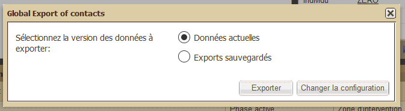
You can export all contacts via the “Export all” button on the Contacts table on the Dashboard. Contacts exported in this way are in standard files (OpenDocument Spreadsheet ou MS Excel) and include a contact model in each tab.
Each iterative group of each contact model is exported in a separate tab which takes the names of the model and the iterative group. Each iteration of the iterative group is represented by a separate row, and the columns show the contact’s user name and their surname/first name, then all the other fields of the group.
To export all contacts:
-
Click on the “Export all” button in the top right-hand corner of the projects table to open the dialogue box “Contacts global export”.
-
Select “Live data” if you want to export the data that is currently present in the database, or “Export backup” to choose a previous back-up of all the projects, as happens automatically on a regular basis.
-
If you have chosen “Saved exports”, you have to (i) enter a period to find the back-up that you are going to export (enter a start date and an end date, then click on “Search”, and (ii) select the desired back-up from the drop-down list.
-
Click on the “Export” button to begin exporting.
-
Select the location and the file of your choice then click “Save”.
Changing the configuration
In the “Contacts global export” dialogue box, click on “Change the configuration” button. This opens the “Contacts global export” dialogue box where you can:
-
select the type of file that you want for global exports: .ods or .xls (this parameter is independent of the parameter “File format for Project synthesis” which is available in Administration) ;
-
select what field is to be exported in the global export, for each contact model that is available;
-
decide the frequency of automatic back-ups of exports;
-
decide the maximum time during which automatically backed-up exports are to be kept in the database before being deleted.
5.9.2.2 The Contacts option when exporting a “Project synthesis”
Exporting a Project summary includes an option for exporting Contacts. If you choose this option, the Project summary will include a tab for each of the project’s “Contacts list” field. For more information about using this option, see “Exporting a project summary”.
5.9.2.3 Exporting a “Contacts list” field
To export the contents of a “Contacts list” field, click on the related “Export” button.
If this “Contacts list” field is in a project, you can also find this export in one of the tabs of the “Project synthesis” export. To do this, click on the “Contacts” option when you create a “Project synthesis” export (see The Contacts option of a “Project synthesis” export)
5.9.2.4 Exporting a “Relations” sub-tab from a contact page
When you click on “Export” on the “Relations” sub-tab of a Contact page, the following dialogue box appears:
This allows you to export a single file in OpenDocument Spreadsheet or MS Excel format containing the following information, depending on the options chosen:
-
A simple list of all relations (option always ticked): this produces a tab in the exported file containing all the contact’s relations, without any specific details about related projects, zones or contacts.
-
Details of the relations in data frameworks: provides more details about certain relations that the contact may have with projects, zones and other contacts. More specifically, this option adds a tab per “Contacts list” field in data frameworks and if the data framework specifies that the relation should be in an iterative group, the other elements of the framework’s iterative group are also displayed in columns in the exported file tab.
-
The details of all relations: adds a tab per Contacts list field.
5.9.2.5 “Export contact”
Exporting a contact is done from a Contact page. It is possible to specify certain pieces of information by associating a number of options, in the same way as when exporting a Project summary (see “Project synthesis”): characteristics (compulsory option), a generic list of relations, the details of relations in the frameworks and the details of all the relations.
Information about iterative groups is the same as that for Project summaries (see above).
5.10 How do you export project data to your computer?
Sigmah allows data to be exported in the following ways:
all projects using “Global export” from:
content from a specific project:
the “Management table” and “Details” pages in the form of a "Project summary"
5.10.1 "Global export" from the Projects table on the Dashboard
1. Click on “Export all” in the top right-hand corner of the Projects table to open the “Global export” dialogue box.
2. Select “Live data” if you want to export the data currently in the database, or “Export backup” to choose a previous automatic back-up.
3. If you choose Export backup, you have to (i) enter a period to find the back-up that you want to export (enter a start date, and an end date, and click on “Search”), and then (ii) select the relevant back-up in the drop-down list.
4. Click on “Export” to begin the exportation.
5. Select a location and file then click on “Save”.

Changing the configuration
In the “Export all contacts” dialogue box, you can click on “Change the configuration” to change the configuration of the global export of contacts via the “Configuration of global contacts export” dialogue box. This allows you to :
-
select the type of file that you want for global exports: .ods or .xls (this parameter is independent of the parameter “File format for Project synthesis” which is available in Administration) ;
-
select what field is to be exported in the global export, for each project model that is available;
-
decide the frequency of automatic back-ups of exports;
-
decide the maximum time during which automatically backed-up exports are to be kept in the database before being deleted.

5.10.2 Exporting the “Management table” and “Details” pages: the “Project summary”
-
When you are on a project page, click the Export button on the far right-hand side of the sub-tabs line (“Management table”, “Details”, “Logical framework”, etc.) to open the “Export data” dialogue box.
-
In this dialogue box you can either choose the Project summary with all the exportable fields from the “Management table” and “Details” pages, or you can add the Logical framework, the Indicators and the Contacts to the exportation.
-
Click on the “Export” button to launch the exportation.
-
Select the location and file of your choice then click on “Save”.
5.10.3 Export logical framework data
To export the logical framework, you can either export it with the Project summary, as described above, or on its own, as explained in 4.3.3. Logical framework.
5.10.4 Export indicator data
To export indicators, you can either export them with the Project summary, as described above, or on their own as explained in Managing indicators.
5.10.5 Exporting contact data
To export the contacts related to a project, you have to export them with the Project synthesis, as explained above.
5.11 How do you change your password?
If you have been authorised to do so by your organisation's administrator, you can change your User account password.
To change your password, place the cursor over the email address for your account.

-
Click on "Change your password"
-
This opends a dialogue box.
-
Fill in the information requested, then click on "Save" in the bottom right-hand corner of the dialogue box.

5.12 What can you do if there is an insufficient internet connection?
If there is an inadequate internet connection, Sigmah can still be used thanks to the "offline mode" (see "Offline mode, offline bases and bookmarked projects" ).
In order to use the offline mode, you can either:
-
Prepare your offline environment before you go to the place where you think there will be an insufficient internet connection. See How do you prepare your offline environment?
-
Synchronise your data after working offline. See How do you synchronise data after you have worked offline?
-
Destroy your offline data and file bases. See How do you destroy your offline environment?
5.12.1 How do you prepare your offline environment?
If you know that the place you are going to does not have an adequate internet connection, you can prepare your offline environment in Sigmah (see Offline mode, offline bases and bookmarked projects ).
"Offline environment" means the data and files that you want to be able to consult or modify at any time, even without an internet connection.
There are two offline bases:
-
The offline data base, which contains all the data which is visible in offline mode and all the modifications carried out in offline mode.
-
The offline file base, which contains all the files which can be consulted and all the files which have been added in offline mode.
Preparing your offline environment therefore consists of updating these two offline bases for data and files.
Updating your offline data base
There are three ways to update your offline data base:
-
Start up: when you log on to Sigmah, a dialogue box asks if you want to update your offline data base. Click on "Yes" to begin the update.

-
Synchronisation : when you re-connect to the internet after working in offline mode (see How do you synchronise data after working offline?), the offline data base is automatically updated and the modifications you made when you were offline are sent to the server.
-
At any time: in the offline management menu (which opens when you place the cursor over the connection icon next to the Sigmah logo), a button allows you to update your offline data base.

A progress bar appears when your offline data base is being updated: 
Updating your offline file base
There are two ways to update your offline file base:
-
After updating the offline data base: once your offline data base has been updated, a dialogue box automatically appears asking if you want to synchronise your offline file base. Click on "Yes" to open the "Prepare the transfer of offline files" dialogue box.

-
At any time: in the offline management menu (which opens when you place the cursor over the connection icon next to the Sigmah logo), a "Transfer files" button allows you to open the dialogue box, "Prepare the transfer of offline files".

The "Prepare the transfer of offline files" dialogue box is used as follows:
-
In the upper section, select the files that you want to transfer to the server;
-
In the lower section, select the files that you want to transfer from the server;
-
Once you have selected the files, click on the "Transfer files" button to begin the transfer.
5.12.2 How do you synchronise data after you have worked offline?
Once an internet connection is available again, a notification message informs you that a connection has been detected, and the internet connection icon changes from  to
to  .
.
You can now reconnect to your Sigmah server and synchronise your data in order to (i) put online the work you have done offline, and (ii) receive the work that your colleagues have done when you were offline.
To reconnect, open the offline management menu (by move the cursor over the connection) and click on "Connect & Synchronise".

The following window shows the rate of progress of the synchronisation.

Once the offline data base has been synchronised, Sigmah returns to online mode (reconnected, and the orange background is re-established at the top left-hand corner of the screen), and a dialogue box then asks you if you want to synchronise the offline file base. Click on "Yes" to synchronise it.

When you click on yes, a progress bar appears under the offline mode icon:

5.12.3 How do you destroy your offline environment?
You can destroy your offline environment at any time for security reasons, in order to make sure you do not leave any information on a computer which has used Sigmah.
By destroying your offline environment, you destroy both your offline data and file bases.
To destroy your offline environment, simply click on the button "Destroy offline bases (data and files)" in the offline management menu.

5.13 How do you import data?
In order to avoid entering data twice, you can import files in OpenDocument Spreadsheet, MS Excel and CSV formats.
In order to import data, Importation Frameworks need to have been created in the Administration section. For more information, go to Managing Importation Frameworks .
Two types of importation are possible:
-
Mass importation
-
Verify each match
Mass importation is designed to import large volumes of data, whereas the “Verify Each Match” mode is designed to verify the process in detail.
The importation process therefore includes up to 3 key steps:
-
Begin a new data importation: to choose the file to be imported, the importation framework to be used, and the mass import options if this is the import mode that has been chosen.
-
[for the “Verify Each Match” mode] Choose the projects to be modified or created by this importation.
-
[for the “Verify Each Match” mode] Choose the details of the modifications made to each project during the importation.
1. Begin a new data importation
To import pre-formatted files, click on the Import button on the Dashboard Menu

This opens the following dialogue box. Select the relevant importation framework, the file to be imported, and the most appropriate import method.

If you choose the “Mass import” mode, a few parameters need to be specified before launching the importation:
-
“Create a project when no match is found”: specifies that a project has to be created when no matching project is found in the Sigmah database.
-
“Unlock the project core if necessary”: if the import is going to modify a field belonging to the project core, and the project core is locked, this authorises the core to be unlocked.
-
“If a single file entry has multiple matches” provides two choices when there is ambiguity about the project to be modified in relation to an element of the file to be imported: either “Update all matches” to update all the matches, or “Update none” to make no changes in this situation.
Finally, click on the “Import” button to launch the import.
2. Choose the projects to be modified or created by this importation
If you use the “Verify all matches” import mode, a second dialogue box appears where you can select the projects that you want to modify or create by means of this importation.
Each line of the table represents a project to be modified or created using the data from the imported file. The table has the same number of lines as there are projects susceptible to be modified or created in each of the project models related to the selected importation framework. Thus, if there are 3 project models associated with the selected importation framework and 5 projects are described in the file to be imported, the table will have 15 lines.
The table has the following columns:
-
Tick box: to validate the modification;
-
Model: the project model that will be modified;
-
Variable used for identification: the name and value of the variable from the file to be imported used to identify or to create the project;
-
Import status: informs whether a project has been found for the given identification variable, and whether the importation is ready or not;
-
Code: the code of the matching project which will be modified by the line;
-
Name: the name of the matching project which will be modified by the line;
-
“Create”, “Unlock project core” and “Confirm importation details” buttons: these buttons respectively allow you to (i) create new projects that match the variables extracted from the file, (ii) unlock a project core that will be modified by the importation, and (iii) modify or confirm each modification that the importation will make to the project
(i) When you click on “Create”, this opens a dialogue box for the creation of a new project which is filled in with the matching variables extracted from the file to be imported.
(ii) When you click on “Unlock project core”, the core of the relevant project is unlocked and the import status changes to “Project found and importation ready”.
(iii) When you click on “Confirm importation details”, this opens a new dialogue box that allows you to choose which fields will or will not be modified by the importation. See “3. Deciding the details of the modifications made to each project during an importation”.

Once you have selected all the projects to be modified (by ticking the corresponding boxes) and confirmed all the details of the importation, click on “Import” in the bottom right-hand corner to implement all the changes.
3. Choosing the details of the modifications made to each project during the importation
If you are using the “Verify all matches” import mode, when you click on “Confirm import details” for a project line, this opens a new dialogue box that allows you to choose each of the fields that will or will not be modified by the the importation. This window lists all the fields that will be modified, each time specifying:
-
the name of the field;
-
its current value;
-
the new value that it will have if you confirm the modification.
Tick or untick the modification lines so that only those you want to apply are ticked, then click on “OK” to save your selection and close the window.
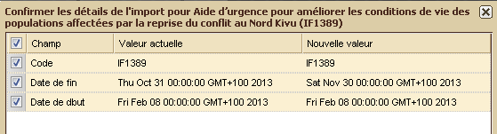
The previous window then reappears. To finish the importation, continue to select the projects that you want to modify and click on “Import”.

5.14 How do you measure the performance of the software?
In default mode, the software performance measurement function is not accessible to any user profiles and access is controlled by the administrator. This function allows information to be collected about the operational performance of Sigmah, and for this to be shared by email.
A software performance measurement cycle involves the following steps:
-
Place the cursor over the peformance measurement icon: this reveals the performance measurement drop-down menu.
-
Click on “Enable measurement of software performance” to begin the performance measurement.
-
Use the software normally, and carry out the actions whose performance you want to measure.
-
When you have finished your test period, click on “Send software performance report”.
-
Finally, click on “De-activate software performance measurement” to stop the performance measurement until the next measurement cycle.
5.15 What can I do… if I have a problem??
There are three options, depending on the seriousness of the problem:
1. First of all, if a piece of information which you have just entered and saved does not appear on your screen, check that you have updated your navigator (short cut: F5 on your keyboard)
2. If the problem persists, you can notify the Sigmah developers by clicking on the link Report a bug in the top right hand corner of any open page of the software.

3. Finally, you can consult the “Technical support” and “Feedback & suggestions” forums at www.sigmah.org.
6 Administration
Access to the administration zone is restricted to users who have the right to configure the software. It is accessed by clicking on the Administration button situated in the bottom left hand corner in the Menu section.
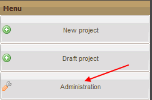
The administration zone allows you to create or modify:
For more information about the “model” concept, see the "Models" section.
6.1 Concepts for the administrator
6.1.1 “User”, “Profile” and “Privacy group”
User
A “user” is an individual who is authorised to use Sigmah as part of an organisation’s use of the software. This means that their project team (or the organisation’s Sigmah focal point, depending on the institutional set up) has given them a certain number of rights with regard to using Sigmah which are decided during the parameterization of the software and which the user in question may or may not be able to modify (see Profiles below).
In the “Users” table, accessed via the “Users” sub-tab on the “Administration” screen, there are 9 pieces of information about each user :
1. Surname
2. First name
3. Status: a user account can be
-
Active (which means that the user’s account has been created and can be used by them)
-
Blocked (which means that the user’s account has been created but cannot be used by them)
4. E-mail
5. Invitation language: English or French
6. Organisational unit
7. Password change key
8. Last password change
9. Profiles: see below
Profile
A profile is all a user’s rights depending on the types of authorization that they have and the privacy groups (see below) they belong to.
These authorizations (called "Global permissions" in the software) are as follows:
Authorisations related to projects
View projects: allows the user to view projects that they are a team member of.
Edit project field content: allows the content of Phases and the “Details” sub-tab to be edited for projects that the user is a team member of.
Edit closed project/phase content: to edit the content of a project or phase even though it is closed.
Delete project file: gives authorisation to delete a file attached to the server by a user (to delete the files available in the sub-tabs “Reports and documents”)
Change phase: authorisation to close a phase of a project and activate the next one
Link 2 projects
Lock project core
Validate project core version
View all projects: allows the user to consult the content of all projects attached to organisational units that they have access to, as well as the projects that the user is a team member of.
Edit all projects: allows a user’s editing rights (fields, logical framework, agenda…) to be extended to all the projects attached to the organisational units that they have access to.
Delete project
Lock project core
View logical framework: gives authorisation to view the “Logical framework” sub-tab
Edit logical framework: gives authorisation to edit the content of the “Logical framework” sub-tab
View agenda: gives authorisation to view the “Agenda” sub-tab
Edit agenda: authorisation to edit the content of the “Agenda” sub-tab
Edit reminders
Edit all reminders
View indicators: gives authorisation to view the “Indicator management” and “Enter indicators” sub-tabs
Indicator management: authorisation to edit the contents of the “Indicator management” sub-tab
Edit indicators: gives authorisation to edit the content of the “Enter indicators” sub-tab
View map: gives authorisation to view the “Map” sub-tab
Manage main site: authorisation to define and edit the location of the project
Manage sites: authorisation to define and edit indicator collection sites
View team: gives authorisation to view the “Team” sub-tab
Edit team: gives authorisation to edit the “Team” sub-tab
Create project
Create test project
Delete project
Authorisations related to organisational units
Edit content of organisational unit fields: gives authorisation to edit the content of the “Information” sub-tab of the organisational units that the user has access to
Delete file from an organisational unit
View organisational unit agenda: gives authorisation to view the “Agenda” sub-tab
Edit organisational unit agenda: authorisation to edit the content of the “Agenda” sub-tab
Authorisations related to contacts
View contacts: gives the right to view all the contacts linked to a project or an organisational unit which depend on the user’s attached organisational units
Export all contacts: displays the “Export all” button on the Contacts table of the Dashboard, and activates the corresponding function
Edit contacts
Import contacts
Delete contacts
Authorisations related to Administration
View administration: displays the “Administration” button in the menu on the Dashboard, and allows access to the corresponding screen
Manage users: displays the “Users” component in the “Administration” menu, and allows access to the corresponding screen.
Manage organisational units: displays the Organisational unit component in the Administration menu, and allows access to the corresponding screen.
Manage project models: displays the “Project models” component in the Administration menu, and allows access to the corresponding screen
Manage organisational unit models: displays the “Organisational unit models” component in the Administration menu, and allows access to the corresponding screen.
Manage contact models: displays the “Contact models” component in the Administration menu, and allows access to the corresponding screen.
Manage report models: displays the “Report models” component in the Adminstration menu, and allows access to the corresponding screen
Manage categories: displays the “Categories” component in the Administration menu, and allows access to the corresponding screen
Manage importation frameworks: displays the “Importation frameworks” component in the Administration menu and allows access to the corresponding screen
Manage parameters: displays the “Parameters” component in the Administration menu, and allows access to the corresponding screen
Other authorisations
Edit own reminders
Edit all reminders
Import data
Global export: displays the “Export all” button in the projects table and the contacts table on the Dashboard, and activates the corresponding function
Export to HXL: feature not available in v2.2
Create group iterations: allows new iterations to be created in the iterative groups contained in projects, organisational units or contacts
Change password
Manage software performance measurement: activates the software performance monitoring menu
Privacy group
A privacy group is a number of sections which have the same type of privacy. For example, a “Security” privacy group might include all the sections with security-related information or an HR privacy group might include all the information related to the monitoring and evaluation of human resources, etc.
When a section is included in a privacy group, by default it can no longer be viewed by all users.
But these privacy groups can then be associated to users via the link created between these groups and profiles, to allow access to sections which belong to privacy groups. Two levels of authorization exist between profiles and privacy groups:
-
View: allows users with this profile to view the content of a privacy group without modifying it ;
-
Edit: allows users with this profile to view and modify the contents of a privacy group.
If a user has several profiles, only the strongest authorization level is maintained for each privacy group.
6.1.2 Fields
All project model, organisational unit and contact fields have the following 9 characteristics:
-
Name: the heading which end users will see
-
Type: format in which information will be entered (to be chosen from a drop-down list). See "Definitions of model field types" for more details.
-
Container: box containing a number of groups. In concrete terms, this involves the Details sub-tab or the Phase details section for a given phase of the project model. And for an organisational unit, the container is always the sub-tab “Information”.
-
Group: named group of several fields
-
Order: number indicating the position in which a field is displayed in relation to the other fields of the same group (tip: use initial values of 10, 20, 30, etc. so that it is easy to then insert subsequent fields between two others, for example, by giving a field the value of 15 so that it can be inserted between field 10 and field 20)
-
Required: indicates whether or not it is necessary to complete a section.
-
Privacy Groups: to make a field accessible (or not) to certain user groups. For more information see "How do you create a Privacy Group?".
-
Amendable: to choose whether modifications to the field will be controlled by the “Amendments” system. For more information see "How do you amend a project?".
-
Exportable: to decide whether or not the field will be exported in the Project synthesis spreadsheet.
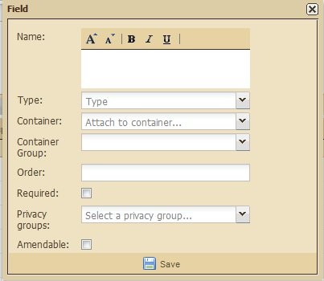
6.1.2.1 Field types
In relation to “Project”, “organisational unit” or “Contact” models, a "type" is the format in which information should be entered in the field being created (see "How do you edit a project model which has just been created?" for more information). The format is chosen from a drop-down list which appears when you click on the arrow on the right hand side of the line.

The different possible field types are:
-
Checkbox: if, for example, a Checkbox field has the title “Agreement from the Board to launch the project” for a project model, the user will see a checkbox with the text “Agreement from the Board to launch the project” in the associated project.
-
Date field: field asking user to enter a date
-
Calculation field: displays the result of a calculation
-
Number field: to enter a whole or decimal number
-
Paragraph field: field that allows a text of several lines to be entered
-
Text field: a box where you can enter a line of text, a paragraph, a date or a number
-
Choice list: a list from which one or more answers can be chosen.
-
Choice list of project core versions: drop-down list of all the validated project core versions. Project core versions can be used, for example, in the design phase, by indicating the project core version (project title, budget, end date, logical framework, etc.) on which the initial design is based. This makes it necessary to validate at least one project core version in phases where fields of this type are obligatory. [Field type only available for project models, and not available for organisational unit models] (for more information about project cores, see "The "Project core" and "Project core" versions").
-
Contact list: field that allows a list of contacts to be established that are related to a project, organisational unit or contact. For more information, see “Contacts”.
-
Report list: a group of several reports. (See "The Report concept")
-
Files list: the name of the field corresponds to the type of file expected for the project or the organisational unit. “Project photos” or “Initial assessment report” are examples of names for File list fields.
-
Triplets list: a list of elements containing three variables to be entered by the user: (i) code, (ii) name, (iii) period
-
Message: information which will be displayed on the screen. This section does not ask the user for any information.
-
Report: a single report (See "The Report concept")
In addition, certain types require supplementary information to be entered in the same dialogue box.
Supplementary information for “Files list”
“Max limit” refers to the maximum number of files allowed in the list.

Supplementary information for "Choice list"
Three extra pieces of information are requested for "Choice list":
-
Multiple answers? If ticked, this means that several values can be chosen in the list. If not ticked, it means that a single value needs to be chosen.
-
Related category: indicates whether or not the values to be chosen for the Choice list should be part of a Category (for more information, see "the Category concept").
-
Personalised choices : allows the values in the list to be established freely

To create a “Personalised choice”, write its name in the field then click “Add”:

The new Personalised choice then appears under the text field.
To delete a choice, click on the cross on the left.
Supplementary information for “Report” and “Report list”
For “Report” or “Report list”, the only supplementary information is:
-
Report model name: the report model name indicates the format of the report attached to this field (e.g. the “Single Form”).
For more information, see "Reports" and "Managing report models".


Supplementary information for “Calculation fields”
-
Formula: formula for the calculation that is displayed in this field, see « How do you write a calculation field formula? ».
-
Code: code given to a field to be used in calculation field formulas. A Calculation field is itself given a code which can then be used in other calculation field formulas.
-
Upper limit and Lower limit: specifies the minimum and maximum values that are allowed for the result of this calculation field formula.

Supplementary information for “Date” fields
-
Lower limit and Upper limit: specifies the minimum and maximum values allowed for the field
Supplementary information for “Number” fields
-
Code: code to be given to the field to be used in calculation field formulas.
-
Decimal?:if the box is ticked, this indicates that a decimal is to be used. If it is not ticked, a whole number is to be used.
-
Lower limit and Upper limit: specifies the minimum and maximum values allowed for the field.
Supplementary information for “Text” and “Paragraph” fields
-
Number of characters: indicates the maximum number of characters that can be entered in “Paragraph” or “Text” fields.
Supplementary information for “Contact list” fields
-
Number of contacts: limits the number of contacts that can be added.
-
Contact type: to limit the type of contacts that are accepted to either “individual” or “organisation”.
-
Is member: this only needs to be specified if the type of contact is limited to “organisation” and if the contact list field is added in a contact model. If this is the case, it specifies whether all the contacts related to this model will be considered as members of the organisations selected in the contacts list field being created.
-
Contact models: in order to accept only contacts that belong to one of the contact models specified in the configuration.
6.1.2.1.1 Writing formulas for “Calculation fields”
Formula for “Calculation fields” are written in a similar way to formula in spreadsheets, such as OpenDocument Spreadsheet and MS Excel.
A formula is composed of a list of the following elements, each separated by a space:
-
Number field codes and Calculation field codes for current model: the “Specific properties” of the Calculation field editor proposes an “Editable list of available fields in this model” which specifies the associated code for each of the Number and Calculation fields of this model. In order to change a field code in this list, click on code.
-
Mathematical operators: +, -, /, *, (, )
Linked Project fields retrieval via calls to fundingSources() and fundedProjects() functions: these functions allow you to integrate information from linked projects into Calculation fields. The retrievals are made up of two parts separated by a “.” See the following example: “fundingSources().sum(@contribution) - fundedProjects(Local partner project v2).sum(field56)”.
On the left-hand side, “fundingSources()” or “fundedProjects(Local partner project v2)” refers to:
choice of function: “fundingSources()” for funding sources and “fundedProjects()” for funded projects.
optional project model filter: In the above example, “Local partner project v2” indicates that “fundedProjects(Local partner project v2)”represents for the project P which will have this calculation field all the projects funded by P and that have the project model “Local partner project v2”.
On the right-hand side, “sum(@contribution)” or “sum(field56)” refer to information to be collected from linked projects:
Field code (e.g. “field56”) or keyword (e.g. “@contribution”): if a project model filter is used in the function relating to linked projects, you can specify a project model field code in the filter which will be returned in the Calculation field. Alternatively, whether a project model filterhas been specified or not, you can still use a keyword “@contribution” to return the contribution of linked projects in the Calculation field.
Aggregation function (e.g. “sum()”): this function indicates the aggregation operation to produce a single value in the Calculation field if the left-hand side corresponds to several linked projects (“fundingSources()” or “fundedProjects(Local partner project v2)”). Two aggregation functions are available: “sum()” to calculate the sum of values and “avg()” to calculate the average of values.
So, our example, “fundingSources().sum(@contribution) - fundedProjects(Local partner project v2).sum(field56)” can be read as: the sum of financial contributions of all funding sources of this project minus the sum of field56 of all the projects financed by this project and that have the project model “Local partner project v2”.
6.1.3 Test projects
A "Test project" is a project which is created using a "Draft" project model.
It allows you to clearly visualise what a project created using a "Draft" project model will be like, before making it "Available".
As long as it is not linked to an operational unit, the "Test project" is only visible to its creator.
To create a Test project:
-
Click on "Test project" in the Dashboard Menu.

-
Enter a Code, a Title and choose a model.

-
Click on "Create". Your "Test project" appears in the Dashboard's table of projects.
6.2 Managing users and rights
The Users page is split into 3 sections:
-
Users: to create and modify user accounts
-
Profiles: to create and modify profiles
-
Privacy groups administration: to create and modify privacy groups
For more information about these three notions, see "Users, Profiles and Privacy groups".
The Users section allows 4 types of action:
-
“Add user” button: to create a user
-
“Disable/enable” button: to block or unblock a user
-
“Search user by name” button: to gain direct access to a particular user by entering their name and email
-
“Edit” button: to modify a user
The “Profiles” section allows 3 actions to be carried out:
-
“Add profile” button: to create a user’s profile
-
“Edit” button: to modify a user’s profile
-
"Delete" button: to delete a user's profile
The “Privacy groups administration” section allows 3 actions to be carried out:
-
“Add” button: to create a privacy group
-
“Edit” button: to modify a privacy group
-
"Delete" button: to delete a privacy group
N.B. : The contents of the “Users” and “Profiles” sections can be refreshed as modifications are made by simply clicking on the “Refresh” button.
6.2.1 How do you add a user?
New users can be added one at a time in the “Users” section. There are two possibilities:
For an individual who is not yet in the contacts database
To do this, click on the “Add User” button located below the section heading.

This opens a dialogue box headed “New user”:

Fill in the following information:
-
Surname:
-
First name:
-
E-mail:
-
Organisation: the organisation that the new user belongs to
-
Contact model: contact model to be used to add the new user to the contact database
-
Invitation language: choose between English or French in the drop-down list.
-
Organisational unit and profiles table: each time you click on the “Add organisational unit” button adds a line to the table, which then needs to be filled in, specifying the organisational unit and all the user profiles that will be applied to the user for the given unit.
Create a new user based on a contact from the database
To do this, click on “Create user from contact”. This opens the “Create user from contact” dialogue box:
Select the contact that you want to use to create the new user via a drop-down list of email addresses, then click on “Add User”. This opens a dialogue box to create a new user as described above, with all the fields filled in with the values from the selected contact.
6.2.2 How do you disable (or enable) a user account?
Users accounts can be disabled (or enabled) in the Users section (one at a time). To do this, click on the button, “Enable/disable” located below the section heading next to the “Add user” button.
If there are several users in the table, select the line of the user you want to modify then click on “Enable/disable” :

If the status displayed in the Users table was “Active”, this will now change to “Blocked”:

To re-activate a user’s account, click again on Disable/enable.
6.2.3 How do you search for a user?
In the Users section, you can search for a particular user. To do this, enter their name in the box adjacent to “Search user by name”.

6.2.4 How do you edit a user account?
A user account can be modified in the Users section. To do this, click on the “Edit” button at the end of the line concerned.

This opens a dialogue box presenting the specific information associated with this user:
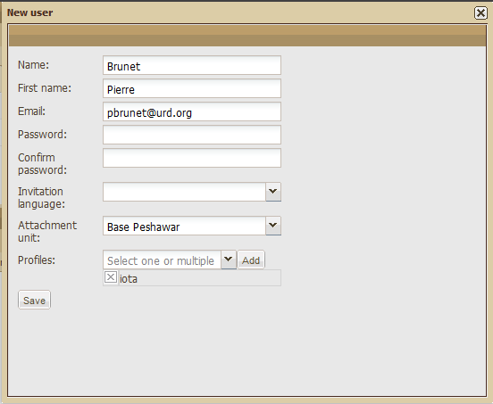
Carry out the modifications you want then click on “Save”. A confirmation message appears in the bottom right hand corner of the screen.
6.2.5 How do you add a profile?
New users profiles can be created in the “Profiles” section. To do this, click on the “Add profile” button below the section heading.

This opens a dialogue box in which you can enter a profile name, select different types of authorisation and select privacy groups:
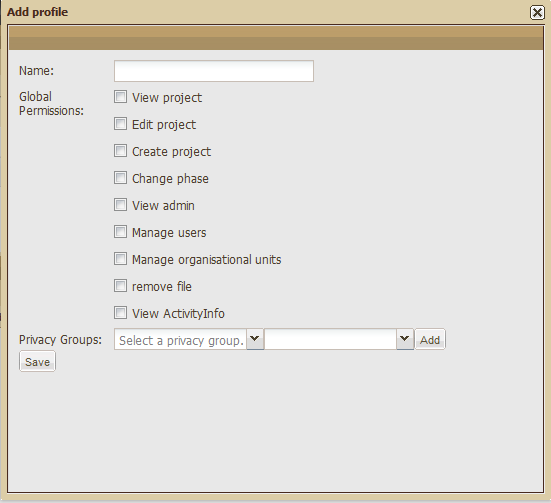
Click on “Save” in the bottom left hand corner to save the information entered. A confirmation message appears in the bottom right hand corner of the screen.
6.2.6 How do you edit a profile?
To modify a user profile, click on the “Edit” button at the end of the line concerned.

A dialogue box opens which allows you to modify the selected profile:

When you have saved the changes, a confirmation message appears in the bottom right hand corner of the screen.
6.2.7 How do you create a privacy group?
To create a privacy group, click on the “Add” button under the section heading.

This opens a dialogue box with the following information to enter:

Once this information has been entered, click on “Save”. A confirmation message then appears in the bottom right hand corner of the screen.
6.2.8 How do you edit a privacy group?
To modify a privacy group, click on the Edit button at the end of the line concerned.

This opens the following dialogue box:

Once the modifications have been made, click on Save. A confirmation message then appears in the bottom right hand corner of the screen.
Another dialogue box opens in order to refresh the “Privacy groups” column in the “Profiles” section which is also affected by the changes which have been made:
Click “yes”.
6.3 Managing organisational units
The "Managing organisational units" page is made up of a single block. It allows you to create organisational units using organisational unit models as well as modify and delete those which have already been created. (For more information about organisational unit models, go to "Organisational units").
The organisational unit table has 5 buttons situated below the table heading:
-
Expand all
-
Collapse all
-
Add
-
Move
-
Delete
N. B.: For more information about the “Expand all” and “Collapse all” buttons go to the “Expand/Collapse all organisational units” section in the Organisational units table (For better navigation within folders, see the “Opening/closing a folder with sub-folders” section on the same page.)
It is also made up of 5 columns:
-
Checkboxes: to select a line and the sub-zones which it may include. Note that all the zones and sub-zones of the table can be selected by clicking on the first checkbox located at the level of the column headings.
-
Code:
-
Title:
-
Country:
-
Model:
Creating an organisational unit
To add an organisational unit, select the line in which you want to create the new unit then click the “Add” button.

A dialogue box then appears:
Fill in the required fields then click on “Create”.

The new unit is created and appears in the automatically updated table.

Move an organisational unit
To move an organisational unit, select the line of the unit you want to move then click on “Move”.

A dialogue box then appears:
Select the new position of the organisational unit in the drop-down menu then click on Move.

The moved unit appears in the automatically updated table.
Deleting an organisational unit
To delete an organisational unit, select the line of the unit you want to delete then click on “Delete”.
A dialogue box then appears:

To confirm the deletion click on Yes, to cancel it click on No. If you confirm the deletion, the table is automatically updated.
6.4 Managing project models
The Project models page is made up of a single section and can be used to create and modify project models.
For more information about the model concept, see "Model concept".
For more information about the project concept, see "Project concept".
6.4.1 How do you create a project model?
To create a project model, click on the Add button located below the Administration tab.

This opens a dialogue box :
Give the project model a name then select a type of project model from the three possibilities (NGO project, Funding project, Local partner partner) by clicking on the circle between the icon and the title. Then click on “Save”. A confirmation message appears.
Your project model is then added to the list of models which already exist.
6.4.2 How do you edit a project model?
Once your project model has been created, you have to edit it, that is, give it specific characteristics. To do this, click on the project model concerned. It appears in the list of existing models. By default, its status is that of a Draft (as opposed to a Used model).

The administration page then changes screen without opening a new tab:

This editing page has two sections:
-
The upper section includes the information already entered (name of project model, state and type of project) plus a “Save” button.
-
The lower section is made up of the editing table which itself has three tabs (“All fields”, “Phases” and “Log Frame”). The editing opens by default on the first tab (“All fields”).
6.4.2.1 Upper section:
This section allows 5 pieces of information related to the model to be modified:
-
The name of the model
The state of the model:
Draft: final users will not be able to view the model – it will only serve as a base to create pilot projects
Available: final users will be able to view the model and will therefore be able to select it to create new projects;
Unavailable: after having been used, final users are once again no longer able to view the model: it can not be used to create new projects.
-
The type of model (NGO project, Funding project, Local partner project).
-
The "Maintenance" mode: for more information about this, see "How do you modify an "Available and Used" project?".
-
The “User profiles added by default to the project team”: each of the user profiles that is selected here will be added automatically to the project team for all the projects created using this model.
To save any changes that are made, you must then click on “Save”.
NB: This "Save" button is only used to save changes made to the upper section of the screen. For the lower section, all changes are saved due to the action buttons or in the dialogue boxes.
6.4.2.2 Lower section:
This section is made up of the following 4 tabs:
-
All fields: to specify what information needs to be entered either in the "Details” sub-tab or in the “Phase details” sub-tab of a project or projects using this model.
-
Phases : to specify the number, names and organization of the phases which will need to be completed in the Management Board.
-
Logical framework: to specify the characteristics of the logical framework which will need to be entered in the Logical Framework sub-tab.
-
Importation frameworks : to establish links between importation frameworks and this project model.
6.4.2.2.1 All fields tab:
The “All fields” tab includes a tool bar and a table:
The table has 11 columns which correspond to the 11 different characteristics which a field can have:
Name,
Type,
Required
Privacy group,
Amendable,
Exportable,
Banner,
Banner position,
Container,
Group
Group order
Default fields
Just after the creation of a new project model, the table is automatically filled with the following 9 fields (in nine different lines) :
-
Code,
-
Title,
-
Budget,
-
Start date,
-
End date,
-
Country,
-
Owner,
-
Manager,
-
Organisational unit
Amongst the 11 characteristics (columns) in the editing table, the second, Type, is already completed with the information "Element by default". This parameterization, which can not be changed under any circumstances, means that this field will be present with its corresponding heading (Code, Title, Country, etc.) in all the projects created regardless of their model and their type of project (NGO, Funding or Local partner).
How do you edit a project model’s default fields?
To set each default field, click on its name. This opens a specific dialogue box for each field.
For example, for Code:

For each dialogue box, once the information has been entered, click on “Save” at the bottom of the box. A confirmation message then appears.
The “Budget ratio” field requires the creation of two other fields in order to produce a calculation of budgetary consumption. These can be number fields or calculation fields. It is also possible to rename the field “Budgetary field”.
Another type of information is directly accessible from the editing table - "Group", in the second last column. When you click on its name, the following dialogue box appears:

How do you edit a field within a project model?
The characteristics presented below apply to each of the columns of the editing table. (See "How do you edit a project model which has just been created? Definitions of model field types"):
-
Container: concerns the location where this field can be filled in. The container location can be chosen from a drop-down list which appears when you click on the arrow at the end of the line.
-
Group: concerns the location where this field can be filled in. The group is selected from the list of groups available for this container.
-
Required: indicates whether the field has to be filled in by the project user or if it can be left blank. To make it a required field, click on the corresponding tickbox.

-
Privacy groups: to decide whether or not a field is accessible to certain user groups. (See " How do you create a privacy group? " for more details). The privacy group for a new field can be chosen from a drop-down menu which appears when you click on the arrow on the right hand side of the line:

-
Part of the project core: to establish whether the field is included in the Project core for this model (for more information, see "Project core" and "Project core" versions". A field which is part of the Project core will be locked if the Project core is locked, and its value appears in the window where Project core versions are compared. To make a field part of the Project core, click on the corresponding tickbox.
-
Exportable in project synthesis: to establish whether or not the field is exported to the project synthesis (spreadsheet in OpenDocument or MS Excel format). If you tick this box, the field will be exported for all users. Consequently, fields which should remain completely private should not be exported. This box only concerns the project synthesis, and is not related in any way to general exports: you can decide not to export a field here, and decide to include it in a general export later via the general exports setup screen if you have "General exportation" rights. The "Exportable in Project Synthesis" feature is available for all field types, except Files and Reports.
N.B. : Saving the information that has been entered
When you have finished entering information, do not forget to click on "Save". A confirmation message then appears.
If you have not filled in all the fields in the form, an error message appears:

For more information about the 11 characteristics of a field, see "Fields" and "Field types".
Calculation fields
Calculation fields show the result of a calculation based on values from other number fields and calculation fields.
In the specific properties of each number field or calculation field, it is necessary to fill in the field code (e.g. field001m field002, etc.). These codes are used in calculation field formulas. The default numbering of these codes is based on the order that they are created, but these can be modified.
For more information about calculation fields, see How do you write a calculation field formula?.
How do you create a “Field group” within a project model?
Click on “Add group” below the tab “Fields” next to “Add”. This opens a dialogue box:

Fill in the following fields:
-
Name: heading which will be seen by the final users.
-
Container: location where the group will be contained
-
Vertical position: indicates the vertical position of the group in the container, which makes it possible to choose the order in which groups are displayed.
-
Iterative group: if the box is ticked, this indicates that the group created will be an iterative group. For more information about establishing and using iterative groups, see “Using iterative groups”.
How do you remove a field?
To remove a field:
-
Select the field to be removed by clicking on it;
-
Then click on the "Remove selected fields" button;
-
Click on "yes" to confirm your choice, or "no" to cancel it.
6.4.2.2.2 The “Phases” tab
By default, the “Phases” tab includes:
-
an “Add” button
a table with 4 columns:
Order,
Phase name,
Next phases
Phase guide

How do you modify a phase which is part of a project model?
At the end of each line (in the fifth column) is an “Edit” button. Click on this to update the corresponding phase. This opens the following dialogue box:

Fill in the following fields:
-
Phase name: phase heading as it will be seen by the end user on the Management board.
-
Next phases: when several phases are available, this makes it possible to choose which phases will come directly after the phase being modified. (Do not indicate all the subsequent phases, but only the phase or phases which come directly after it. Generally, there is only one phase which follows).
-
Is root? Tick this box if you want the phase that you are filling in to be the initial phase of the project when it is created.
-
Order: the order in which the phase tabs are displayed in the Management board.
-
Phase guide: an internet address (URL) towards which users are re-directed when they click on the “Phase guide” button for the phase concerned.

How do you create a new phase within a project model?
Click on the “Add” button below the Phases tab. This opens the following dialogue box:

For more information about filling in the fields in this dialogue box, go to "How do you modify a phase which is part of a project model?".
6.4.2.2.3 “Log Frame” tab
The “Log Frame” tab includes:
-
a “Save” button,
-
a “Log frame name” field
a table with 4 sections:
Specific objectives (SO),
Activities (A),
Expected Results (ER),
Prerequisites (P)
Each of these sections is made up of several fields.
Use the scrollbar on the right hand side of the screen to view the lower sections:

N. B.: All the information entered in this page will be seen by the final user in the Log Frame sub-tab of a project regardless of its model or type.
How do you edit the logical framework model of a project model?
First, you can modify the default name of the logical framework “Default log frame”. To do this, delete the default name and enter the name of your choice. A confirmation message then appears.
Similarly, default proposals are made for each of the fields of the 4 sections on the basis of the most common format for a logical framework (a table with 4 columns – which cannot be modified here – with a maximum number of lines and groups – the default setting being 3 here for each section, unless specified otherwise below).
Here is the list of elements which can be modified by section:
1. Specific Objectives (SO) :
-
Max number of SO:
-
Enable SO groups? (this is a yes/no question, with “yes” the default setting)
-
Max number of SO groups
-
Max number of A per group:
2. Activities (A) :
-
Max number of A:
-
Max number of A groups:
-
Max number of A per ER:
-
Enable A groups? (this is a yes/no question, with “yes” the default setting) .
-
Max number of A per group:
3. Expected results (ER) :
-
Max number of ER:
-
Max number of ER groups:
-
Max number of ER per SO:
-
Enable ER groups? (this is a yes/no question, with “yes” the default setting)
-
Max number of ER per group:
4. Prerequisite (P) :
-
Max number of P:
-
Max number of P groups:
-
Max number of P per group:
-
Enable P groups? (this is a yes/no question, with “yes” the default setting)
6.4.2.2.4 The "Importation frameworks" tab
The "Importation frameworks" tab allows you to link importation frameworks with your project model. To find out more about importation frameworks, see Managing importation frameworks.
A link between an importation framework and a project model is a series of rules connecting project model fields and variables extracted from the importation framework.
Linking an importation framework and a project model
To link an importation framework and a project model, click on "Add" on the left-hand side of the "Importation frameworks" tab.

Select the importation framework you want from the list of all the importation frameworks that have been created, then click on "Save". The name of the importation framework is then added to the list on the left, and the following window then asks you to define your identification rule:

The identification rule is the rule which connects a project field and a variable extracted from the importation framework and which allows the extracted project to be identified with a project derived from the project model.
To define the identification rule, select a field and a variable, then click on "Save".
Your rule then appears on the right-hand side of the "Importation frameworks" tab. Identification rules are distinguished by the key icon which precedes their Field name.

Add a connection rule
To add new connection rules, click on the "Add" button on the right-hand side of the screen. This opens the following dialogue box:

To finish defining the connection rule, select a field and a variable then click on "Save".
Remove a connection rule
To remove a connection rule, click on a rule to select it on the right-hand side of the screen, then click on "Remove" on the right-hand side of the screen.
Remove a link with an importation framework
To remove a link with an importation framework, click on the corresponding importation framework to select it on the left-hand side of the screen, then click on "Remove" on the left-hand side of the screen.
6.4.3 How do you import a project model?
Click on "Import" located at the top-left of the table. This opens a dialogue box. Click on "Browse" :

This opens your computer’s file selection dialogue box. Select a file (.dat) and click on "Open" :

The selected file appears in the previous dialogue box. Then select a project model type by using the drop-down list and click on "Ok".

The project model is imported and is automatically added to the updated list.
6.4.4 How do you modify an "Available and Used" project?
To modify a project which has "Available and Used" status, Sigmah has a "maintenance" mode for your project models. During a "maintenance" period, you are temporarily able to make a number of changes, such as adding or de-activating fields. While a project model is being maintained, it is not possible to modify the content of the projects which are derived from it.
Programming a maintenance period for a project model
Defining a maintenance period in advance means that users are informed that their project will temporarily not be able to be modified as of the date and time indicated. It is nevertheless possible to programme a maintenance period so that it begins immediately by choosing a starting date/time which is earlier than the present time.
To programme a maintenance period, go to the Administration section and click on Project models on the left. Next, select the relevant project. This opens a block on the right for this project. Check "Maintenance" (3rd line).

Two fields then appear on the right to define the day and time when the maintenance period begins. Choose the day and time that suit you and click on "Save" at the bottom on the right.

A message then appears informing you that your update has been successful.
Modifying a project model in maintenance mode
Once the maintenance period for a project model has begun, its "Fields" tab makes new actions available such as "Activate the selected fields" and "De-activate the selected fields".
This is the full list of actions that you are authorised to carry out on a project model in maintenance mode:
-
Add fields
-
Add groups
-
Remove empty groups
-
De-activate or re-activate fields
-
Rename fields or groups
-
Increase field limits (e.g. increase the number of files authorised for a "List of files" field)
-
Move a field within a container
-
Change the "obligatory" status of a field
-
Modify the content of a project banner
-
Change the parameters of the framework model
Stop the project model maintenance period
To stop a project model maintenance period, just uncheck "Maintenance" in the top half of the project model, then click on "Save".
6.4.5 How do you delete a project model?
Click on "Delete" located at the right of the selected model. Then appears un dialogue box:

Click on "Yes". The project model is deleted and the list automatically updated.


6.5 Managing organisational unit models
The organisational unit models page is made up of a single section which allows organisational unit models to be created and modified.
For more information about the “model” concept, go to "The model concept".
For more information about the “organisational unit” concept, go to "The organisational unit concept".
The management of organisational unit models works in a similar way to the management of project models. See Managing project models to edit, modify, import, delete, export or copy an organisational unit model.
6.5.1 How do you create an organisational unit model?
To create a report model, enter its name in the empty box located just above the column "Report model name" and click on the "Add" button. A confirmation message will then be displayed on the screen. The new model automatically appears in the list.

This opens a dialogue box:

Fill in the following fields:
-
Model name: name to be given to the model to be used in the organisational unit models page. This name will never be seen by end users (e.g. Mission Model v2)
-
organisational unit type: generic name that the organization wants to give to all the units created using this model.
For example: if the type of unit for the model is “Mission” and a unit created using this model is called “Haiti”, final users will see “Haiti Mission” on their screens.
-
Has budget? : indicates whether the units created using this model will have a budget or not.
-
Can contain projects? : indicates whether the units created using this model are able to have projects attached or not.
Finally, click on the “Save” button in the bottom left hand corner. A confirmation message will then be displayed on the screen.
6.6 Managing contact models
Contacts need to be created based on an existing contact model. The administrator can create as many contact models as they want. There are two types of contact models: “individual” and “organisation”.
For more information about the “Model” concept, see “Models”.
For more information about the “Contact” concept, see “Contacts”.
Contact models are managed in the same way as project models. See Managing project models for editing, modifying, importing, deleting, exporting and duplicating a contact model.
6.6.1 How do you create a contact model?
To create a contact model, open the “Contact models” menu in Administration, and click “Add”. This opens the following dialogue box:
Fill in the following fields:
-
Model name: the name given to a contact model to manipulate it in the managing contact models page. This name is never visible to the final user. Example: “Partner consultants v2”
-
Contact model type: indicates whether the contacts that are created are individuals or organisations.
Click on “Save”. A confirmation message then appears.
6.7 Managing Report models
The Reports page has two sections. On the left is the list of Report models organized by name and on the right are the details of the plan of the report selected in the left hand section (by simply clicking on the report model you want to deal with).

For more information about the “model” concept, go to "The “model” concept".
For more information about the “report” concept, go to "The “report” concept".
6.7.1 How do you create a new report model?
To create a new report model :
-
enter its name in the empty box located just above the Report model name" column
-
click on the “Add” button in the left hand section.
A confirmation message then appears. The new model is created and appears in the automatically updated table.
6.7.2 How do you create a new report section?
To create a new report section, click on the “Add” button in the right hand section.

A new line appears in the “Section name” column: “Click on each field to edit”. Click on the new line to rename it:

Click on the number 0 located in the Order column to choose the place of this new section in relation to the others. Enter a number of your choice then press enter on your keyboard to save your choice.

Now click on the number 0 in the “Number of text areas” column to choose the number of paragraphs this new section will have. Write the number of your choice then press Enter on your keyboard to save it.

To create a link between this new section and a parent section, click on the same line in the “Parent section id” column. A cell with a drop-down list appears.

Click on the down arrow to open the drop-down list:

Select the appropriate section then press Enter on your keyboard to save it.

6.8 Managing Categories
The “Categories” page has two sections:
-
On the left: the name of the categories
-
On the right: labels associated with each category
This page allows 5 actions :
-
Create, delete and import categories
-
Create and delete labels
For more information about "categories" and "labels", go to « Category ».
Creating a category
To create a new category:
-
select one of the six forms proposed in the drop-down list (Circle, Cross, Diamond, Square, Star, Triangle)
-
enter its name in the empty box located on the right of the drop-down list
-
click on the « Add » button.

A confirmation message then appears. The new category is created and appears in the automatically updated table.
Deleting a category
To delete a category:
-
select a category by clicking on its name
-
click on the « Delete » button
A confirmation message then appears. The category table is automatically updated.
Exporting a category
To export a category, click on the « Export » button:
A dialogue box then appears:
Click on "Ok".
Importing a category
To import a category, click on the « Import » button:

A dialogue box then appears. Click on “Browse”:

This opens your computer’s file selection dialogue box. Select the file of your choice and click on "Ouvrir" (Open) :

Then the selected file appears in the previous dialogue box:

A confirmation message will then be displayed on the screen. The category table is automatically updated.
Creating category labels
To create labels within a new category :
-
enter its name in the empty box located just above the column "Colour".
-
select a colour in the drop-down list which presents the colour codes
-
click on the "Add" button

A confirmation message will then be displayed on the screen. The label table automatically is automatically updated.
Deleting category labels
To delete labels within a category:
-
select the label you want to delete,
-
click on the « Delete » button.

A confirmation message then appears. The label table automatically is automatically updated.
6.9 Managing importation frameworks
An importation framework describes the format and manner in which information to be imported from a file mode is to be extracted. If you use preformated fileds in OpenDocument Spreadsheet, MS Excel, or CSV formats, importation frameworks allow you to import data from these files directly into Sigmah without having to enter the data a second time.
Importation frameworks are configured on the "Importation Frameworks" screen in the Administration section. You can:
The "Importation Frameworks" screen is split into 2 sections:
-
The left-hand side which includes the list of importation frameworks
-
The right-hand side which makes it possible to configure an importation framework by defining the list of variables to be extracted from a file imported by the imporation framework selected in the left-hand section. A variable extracted by the importation framework is defined by a name (e.g. "Project Code") and by the reference of the information extracted from the file (e.g. the reference of an Excel cell, such as "B8").

Creating an importation framework
To create an importation framework, click on the "Add" button. This opens the following dialogue box:

Enter the following information which covers the main characteristics of an importation framework:
-
Name: give your importation framework a name
-
File format: choose between OpenDocument Spreadsheet, MS Excel, and CSV formats
Projects to import by file: there are three options
Single: there is only one project by file to import, and the information to extract for the import can be from several tabs from this file.
Several: there can be several projects to import by file, and each tab of the imported file is considered to be a project.
By line: there can be several projects to import by file, based on a single tab in which all the lines, starting from one which is designated as the first, are considered to be projects to import.
The importation framework which is created appears on the left-hand side of the screeen.
Modify the main characteristics of an importation framework
To modify the main characteristics of an importation framework, select the line of a framework on the left-hand side of the screen and then click on "Modify".
Configure an importation framework
To configure an importation framework, click on its name on the left-hand side of the screen and it then opens on the righ-hand side.
Depending on the choices made for "Projects to be imported by file" and "File format" for the importation framework which is opened, the right-hand side of the screen will look different:
-
if you choose "Single" for "Projects to be imported by file": on the right-hand side, you can only create variables to extract from the file;
-
if you choose "Several" for "Projects to be imported by file": on the right-hand side, you can only create variables to extract from the file;
if you choose "By line" for "Projects to be imported by file":
if the "File format" is "CSV": on the right-hand side, you can define the number of the "First line" to consider for the importation of data, in addition to creating the variables to extract from the file;
for a "File format" other than "CSV": on the right-hand side you can define the number of the "First line" and the "Name of the spreadsheet" to be considered for the importation of data, in addition to creating the variables to extract from the file.
To add variables to extract from the importation framework, click on "Add" on the left-hand side of the screen. This opens a dialogue box to define the new variable.

Enter the reference of the information to be extracted in the format requested ("Column", "Cell", or "Sheet: Cell") and a name, then click on Save.
Next step: Linking an importation framework and project models
Once an importation framework has been created and defined, you must then configure its links with the project models which will use the information which is extracted. To learn how to configure these links, see the "importation framework" tab on the project model management screen.
6.10 Settings
The « Settings » page has three sections:
-
At the top left: the overall information related to the organisation
-
At the top right: the information related to the file backup
-
At the bottom: the export file format (spreadsheets)
This page allows 4 actions:
-
Create and modify the organisation's name in the overall Sigmah background image
-
Add and modify the organisation's logo in the overall Sigmah background image
-
Set up the files' backup
-
Select the export file format
Create or modify the organisation's name
To create or modify the organisation's name, fill in the "organisation's name" field and then click on the "Save" button.
Add or modify the organisation's logo
To add or modify the organisation's logo, click on the "Browse" button. Select a file and then click on the "Save" button (the selected logo will then automatically appear below).
Set up the files' backup
To select the type of backup files' versions, click on "All the versions of each file" or "Only the last version of each file".
To select where your backup will be added, click on the drop-down list located just next the "Root organisational unit to build the backup from" field, select a zone and then click on the "Backup all files" button.
Select the export file format
Select a file format by clicking on « Open document spreadsheet » or « MS Excel » and then click on the "Save" button.